1Forgotten Dreams from Childhood
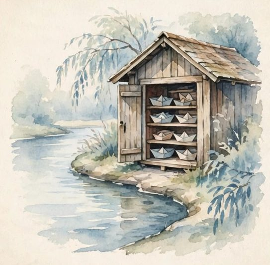
A small wooden boathouse at a river bend, paper boats on its shelves seen through the open door.
At the bend where the river slows, there stands a boathouse with its door open to the water, and on its shelves, in rows, rest the paper boats of childhood. Every child folded them once: a voyage around the world, a lighthouse to keep, a horse, a door into another country of the mind. They were launched in earnest, every one, and then the years did what years do. The boats were not dropped. They were set down, gently, somewhere along the bank, while other things were picked up. This house keeps what was set down, hulls dry, names still legible, until somebody comes down the path.
The principle of the house is stated at the door, where every visitor can read it before stepping in: a dream forgotten is not a dream betrayed. Forgetting is what the river does to every wake, and it accuses nobody. The child who folded these boats is not a creditor waiting at the desk with a bill, and the grown keeper of a life is not in arrears. What rests on these shelves is not evidence. It is cargo, carried a while and set down in good faith, and the house keeps it the way a harbor keeps a record of sailings: without blame, without hurry, and without forgetting the names.
Walk the shelves slowly and you will find the whole fleet at rest: the great professions, the impossible voyages, the small fierce wants that once organized an entire summer. Some were fulfilled sideways, in another currency than the child expected, and the house counts those in full. Some were borrowed from books and other people's hopes, and may be returned without a word of guilt. Some ask, even now, to sail again in a smaller size. Most ask only to be named, thanked, and left at rest under the roof that kept them dry. All of them were real at their launching. That is the only credential this house requires.
2The Boathouse at the River Bend
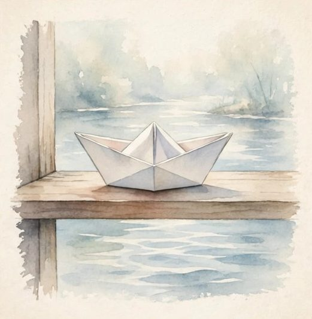
A single white paper boat resting on a wooden shelf, river light behind it.
The boathouse stands where the river makes its slow turn, below the path and above the waterline, built of weathered boards gone silver at the edges. Its roof is low, its door wide, its one window facing the current so the keeper can read the weather without standing up. Inside, the light comes green and gold through the leaves, and the shelves run the length of both walls, tier upon tier, each one crowded with paper boats resting upright in their rows. The air smells of river water, dry paper, and the faint iron of the stove that warms the place in the cold months.
A river bend is a deliberate place to keep such things. The water slows here, turns, and considers; what floats past the straight reaches in a hurry is given a moment at the bend to be seen. The keeper chose the site, or the site chose the keeper — the register does not say — but the arrangement suits the cargo. Forgotten dreams arrive the way driftwood arrives, unannounced, in no order, after long journeys elsewhere. They are taken in, dried, straightened where straightening is kind, and shelved under their own names. Nothing is catalogued by importance. The fleet is one fleet, and the bend treats every hull alike.
Visitors sometimes ask why the house is not nearer the town, nearer the roads and the schools and the offices where the forgetting mostly happens. The keeper answers that distance is part of the keeping. A dream remembered too quickly, in the middle of the errands, gets folded into the errands and lost a second time. Down here, the walk itself does half the work: the path, the gate, the smell of the water arriving before the house does. By the time a visitor reaches the shelves, the hurry has drained out of their shoes. What they come to meet, they meet at river pace, which is the pace these boats were built for.
3What a Child's Dream Is Made Of
Ask what a child's dream is made of and the keeper will not reach for anything grand. It is made of paper, first of all: whatever page was at hand, a notebook leaf, a map, the margin of a book nobody was supposed to fold. It is made of certainty, the unbothered kind that has not yet learned the price of things. It is made of afternoons, of being read to, of watching the older children's boats go farther out than yours could. And it is made of a name painted carefully on the side, in the best hand the folder could manage, crooked capitals and all.
It is also made of borrowed timber, and the house is honest about that. The chart came from a story read at bedtime. The destination came from a film, a cousin, a teacher's offhand sentence about the sea. Half the fleet in this boathouse was folded around somebody else's map, and that does not make the boats less real. A child takes the materials the shore provides. What the child adds is the folding itself: the creases, the earnest pressing-down of every seam, the belief that this one, this particular boat, would go farther than any boat before it. The materials were borrowed. The earnestness was entirely their own.
Last, and most important to the keeper, a child's dream is made of time that has not yet been argued with. The child does not fold a boat for someday in the abstract; the voyage is next summer, the lighthouse is at the end of the actual river, the whole enterprise is scheduled with the confidence of a timetable. That nearness is the dream's true material, and it is why the grown visitor, reading the name on the hull, feels the small weather of it even now. The boat was never a metaphor to its maker. It was a plan, drawn to scale, waiting only for the water to be ready.
4Launched in Earnest
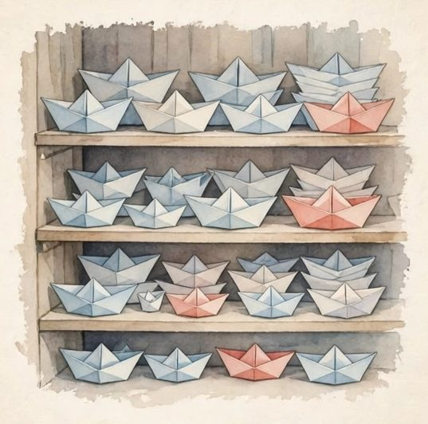
A fleet of paper boats of many sizes resting in rows on boathouse shelves.
No boat in this house was launched as a joke. That is the first thing the shelves teach anyone who walks them slowly: the handwriting on the hulls is careful, the folds are pressed flat with a thumbnail, the cargo holds are stocked with drawn provisions and penciled crews. A child launching a dream does not do it halfway, because a child has not yet learned that halfway is an option. The boat goes into the water whole, with the full weight of the maker's belief aboard, and it is watched until it rounds the bend or the light fails, whichever comes first.
Earnestness, the keeper likes to say, is the one cargo that never gets lighter with age, only better stored. The grown visitor who laughs at a small boat on the shelf is usually laughing at the memory of his own seriousness, and the house lets the laugh happen; it is weather, not disrespect. But the register underneath is plain. These launchings were the first real work of their makers' lives: the first time a hope was given a shape, a name, and a departure date. Everything built later, the careers and the houses and the families, was built by hands that learned their trade at this waterline.
So the house asks one courtesy of everyone who enters: remember the launching before judging the boat. A dream to talk with animals looks small from the far bank of fifty. From the bank of seven it was a serious expedition, provisioned and crewed, aimed at the whole living world. The distance between those two banks is the entire subject of this boathouse, and the keeper patrols it the way a ferryman patrols a crossing. Neither bank is wrong. But only one of them remembers what the water felt like on launching day, and the house keeps its shelves on that side of the river on purpose.
5The Keeper of Paper Boats
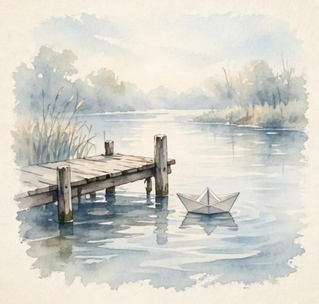
One paper boat floating alone just off a wooden jetty in the morning light.
The keeper of this house is called, in the register and on the small board by the door, the Keeper of Paper Boats, and the title is a job description rather than an ornament. The keeper keeps: that is the whole of it. Boats are taken in, dried, and shelved. Names are kept legible. The roof is kept sound against the winter, the door is kept oiled, the log is kept up in a plain hand. Nothing here is interpreted, improved, or explained to death. The keeper's belief, worn smooth as the jetty boards, is that preservation is a form of respect, and respect needs no commentary.
Visitors expecting a sage meet instead a working person with ink on the fingers and a kettle always somewhere near the boil. The keeper answers questions the way the river answers them: plainly, at the pace the question deserves, and without decoration. Asked which boat on the shelves matters most, the keeper says the one you came down the path to find. Asked whether a forgotten dream should be taken up again, the keeper says that is the visitor's weather to read, not the house's. The keeper keeps boats, not verdicts. It is a narrower trade than prophecy, and a more useful one, and it is practiced here daily.
How the keeper came to the boathouse, the register does not record, and the keeper does not volunteer it; every keeper of anything arrives by a road that is mostly their own business. What matters to the house is the tenure: years of mornings opening the door to the mist, years of evenings closing it against the dark, the fleet growing one recovered boat at a time. The keeper is not the owner of a single hull on these shelves. That, too, is in the register, underlined once. A keeper who owned the boats would start choosing among them. This keeper chooses nothing. Everything folded in earnest is kept.
6A Dream Is Not a Contract
A dream is not a contract, and the house keeps a copy of that sentence where the keeper can see it while working. A contract has parties, terms, and penalties; it is witnessed, dated, and enforceable, and somebody can be held to it in the end. A child's dream has none of that apparatus. Nobody signed. Nobody promised. A small person looked at the river, wanted the far shore with his whole heart, folded the wanting into a boat, and pushed it off. That is the entire legal history of everything on these shelves, and the keeper treats it accordingly — as a launching, not a liability.
The confusion arrives with the grown visitor, who has lived among contracts for decades and starts reading the shelves as an accounts ledger. Here is the voyage unmade, the profession unentered, the promise unkept; the eye goes down the rows doing sums. The keeper lets the sums happen and then points at the water. A wake behind a boat is not a debt the river owes the shore. It is simply the shape of having moved. What was wanted and not reached is the shape of having lived in a particular direction, and direction, the register insists, is not a billable offense against one's own past.
Set the contract reading down, and the fleet changes back into what it is: a record of wanting, kept in a dry place. Nothing on these shelves can be collected on. Nothing here can be foreclosed. The child who folded the boats holds no mortgage over the adult who reads their names, and the adult owes the child no damages for the weather of the intervening years. What passes between the two banks is cargo of another kind entirely — recognition, gratitude, an occasional small relaunching — and all of it travels free, the way everything on a river travels once it has been properly launched.
7Forgotten Is Not the Same as False
A paper boat folded from a page of maps, resting on a chart table in the boathouse.
Forgotten is not the same as false, and the distinction is load-bearing in this house. A dream that slipped from memory for thirty years was not, during those years, a lie somebody told. It was a true thing mislaid, like a key in a coat not worn since another winter. The voyage around the world was genuinely wanted, by a genuine child, with genuine provisions drawn in the margins. Time mislaid it. Time mislays most things eventually, including some that were held very carefully, and the mislaying says nothing at all about the truth of the thing mislaid.
The keeper demonstrates this with the register whenever a visitor doubts it. Here is a boat recovered from a moving box, its name faded to a ghost of pencil, and here, in the log, is its launching, dated and described by hands long gone to other work. The entry and the hull agree. The dream happened. What did not happen is the remembering, which is a different department entirely, run by a busier and less reliable staff. The house files forgetting under weather — it came through, it covered things, it moved on — and weather is never entered in the log as anybody's fault.
This matters because the far bank has a cruel habit of rewriting the near one. Looking back, the grown eye decides that what it no longer wants, it never truly wanted; what it no longer remembers was perhaps never real. The shelves answer that revision with paper and pencil, hull after hull. The wanting was real. The forgetting is real too, and the two facts sit on the same shelf without quarreling. A visitor who can hold both at once has understood the first thing the boathouse exists to teach, and the keeper, watching it land, goes back to the kettle with the air of a ferryman whose passenger has finally seen the other shore.
8The Fleet at Rest
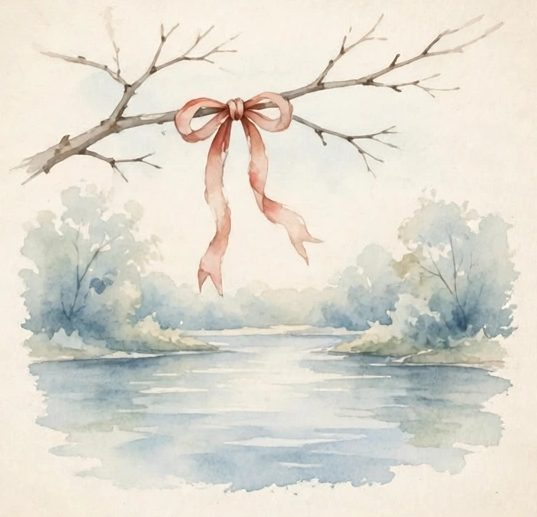
A faded coral ribbon tied to a bare branch above the river, stirring in a light wind.
The fleet at rest is the house's great sight, and visitors usually stop just inside the door to take it in. Row above row, the boats sit in the green-gold light: tall ships of ambition with three folded masts, small blunt ferries of everyday wanting, experimental craft that clearly never expected weather. Dust softens their edges. Nothing drips, nothing calls out, nothing demands a crew. A working harbor is loud with departure; this one is quiet with arrival, and the quiet is not emptiness. It is the sound of hundreds of voyages that have been allowed, at last, to stop pretending they are still waiting for wind.
Rest, the keeper explains, is a condition the house actively maintains. Paper left in the rain returns to pulp; paper left in the sun goes brittle and forgets its folds. So the shelves are kept dry and shaded, the hulls are turned now and then, the names are gone over in pencil when they fade. A dream at rest is not a dream abandoned to rot in a damp corner of the mind. It is a dream in harbor, in the care of a house that considers rest a legitimate final state, as honorable as any launching and considerably more peaceful than most.
There is a temptation, standing before the fleet, to read rest as failure — all these boats that went nowhere. The keeper has heard it for years and answers it the same way: look at the water. The river outside is full of things going somewhere, and most of them are debris. Going was never the measure here. The measure is that each boat was folded in earnest, launched in earnest, and is kept in earnest now, in a house built for no other purpose. A fleet at rest, in good order, under a sound roof, is not a defeat arranged in rows. It is a harbor doing its work.
9Why the House Keeps Them
Why does the house keep them at all, the visitors ask, and the keeper gives the answer in the order the reasons were learned. First: because they were real. A want that organized a childhood summer deserves the same dry shelf as any other true thing a person once made, and discarding what was real, merely because it is old, is a habit the river itself refuses — it returns everything, eventually, to somebody's bank. The fleet is kept because the fleet happened, and a house that keeps what happened is worth more than one that keeps only what succeeded.
Second: because they are still useful, though rarely in the way their makers intended. The boat folded for the voyage around the world taught navigation, patience, and the reading of weather, and all three are in daily service somewhere in the grown life, flying no flag. The lighthouse dream taught a love of night watches and high quiet rooms. Boats teach long after they stop sailing, and a wise house does not throw away its teachers when the lessons move indoors. The keeper points at the shelves the way a librarian points at the stacks: the collection is consulted constantly, even by visitors who swear they came down the path for the view.
Third, and last in the register: because keeping them is a kindness with no customer. Nobody pays for this harbor. No fleet at rest will ever make the house famous, and the keeper knows it and keeps the roof sound anyway. There are things a life maintains simply because they were once loved in earnest, and the maintaining is its own entry in the log. The child who folded these boats cannot come back to check on them. The adult who walks the shelves can. Between those two facts, the house stands at the bend, door open, doing the small unglamorous work of not letting what was loved be lost twice — once to forgetting, and once to disregard.
10Not a Shrine, Not a Bin
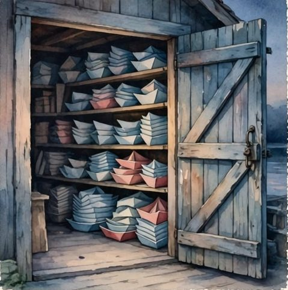
The boathouse door standing open, shelves of paper boats inside, in the last of the dusk light.
The house is not a shrine, and the keeper corrects that idea early, before it can set like varnish. A shrine demands reverence at a fixed distance; it forbids touching, dusting becomes ceremony, and the kept things slowly stop being objects and become obligations. Nothing here is behind glass. Visitors may lift a boat down, turn it in the light, read the name on its hull, and put it back slightly crooked, and the keeper will not mind the crookedness. These were toys of earnest children, not relics, and the house keeps them at handling distance on purpose, because a dream you may not touch becomes a dream you can only fear or worship.
Neither is the house a bin, though that idea arrives too, usually in the brisk visitors who want the past tidied into a lesson and the door closed behind it. The bin reading says the fleet is clutter: outgrown wants, failed launches, paper that should have been cleared out years ago to make room for serious shelves. The keeper answers that nothing in this house failed to be cleared out; it was carried here, hull by hull, at some effort, by people who decided it was worth a dry place. A bin is where things go to be forgotten on purpose. This house exists because somebody refused that arrangement.
Between the shrine and the bin stands the boathouse's actual charter, written in the register in the keeper's plainest hand: a working harbor for retired voyages. Things here are kept the way good tools are kept — cleaned, reachable, unremarkable, and available. Some will sail again in smaller sizes. Most will simply rest, in good company, in the light from the river window. The house asks neither worship nor disposal of its visitors, only the ordinary respect owed to anything that was once launched in earnest. It is, the keeper concedes, a modest charter. Modesty, at this bend of the river, is considered a seaworthy quality.
11For the Ones Who Remember One
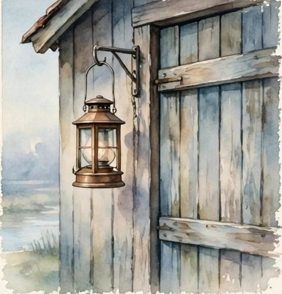
A small lantern hanging by the boathouse door, unlit, in the early morning.
This room of the house is kept for the ones who remember one — the visitors who arrive with a single boat still afloat in memory while the rest of their fleet went quiet years ago. They come down the path a little defensively, as if one remembered dream were a small catch to bring to so large a harbor. The keeper sets them straight before the kettle has boiled. One is not a small number here. One remembered dream, carried whole across forty years of weather, is a considerable seamanship, and the house has seen fleets arrive with far less and be welcomed with the same lantern.
The one remembered is usually not the grandest. It is rarely the voyage around the world; it is the treehouse, the dog, the stage in the attic with the blanket curtain, the shop that was going to sell everything for a penny. Memory keeps what it keeps by its own hydrography, and depth is not the same as fame on any chart. The keeper records the remembered boat in the register with the same care as the recovered ones, and enters, beside its name, the fact of its long service. A dream remembered for decades has worked for decades — as compass, as ballast, as a story told at tables — whether or not it ever once got its hull wet.
If you are such a visitor, the house asks only that you not apologize for the rest of the fleet. The forgotten ones are not diminished by the one that stayed lit, any more than the lit one is diminished by their rest. The river does not keep all its water in one channel, and a life does not keep all its wanting in one boat. Say the remembered one's name at the desk, plainly, the way you would report a light still burning down the coast. The keeper will enter it in the log, and the shelves will make their quiet room, and one, in this house, has always been enough to be going on with.
12The First Rule of the Boathouse
Every house has a first rule, and the boathouse states its own at the end of this hall, where it can govern everything shelved after it. The first rule of the boathouse is this: no dream on these shelves will be mocked, and none will be indicted. Mockery and indictment are the two weathers the roof exists to keep out. A visitor may laugh in this house — the house is full of laughter, most of it fond — but the laugh may not be aimed. And no boat here will be read aloud as evidence against its maker, by any visitor, at any age, for any reason the far bank can invent.
The rule is not sentimentality; it is seamanship. Paper is fragile cargo. A dream hauled out after forty years and held up for ridicule does not survive the handling, and neither, in the keeper's long observation, does the person doing the holding. Contempt is a solvent. It goes through the hull of the old want and then, quietly, through the hull of every present one, because the hands learn the motion. The house protects the fleet and the visitors with the same plank: what was launched in earnest is handled in earnest here, and what is handled in earnest stays whole enough to be thanked, learned from, or kindly relaunched.
Under the first rule, the rest of the charter arranges itself without argument. Forgetting is weather, not betrayal. The child is not a creditor. Sideways arrivals count in full. Borrowed dreams may be handed back at the desk without a speech. A visitor who keeps the first rule will find every other rule of the house easy to keep, because all of them are the first rule wearing different oilskins. The keeper enters it in the register once, in ink, and underlines nothing. Rules that have to be underlined, the keeper says, are usually rules the house does not actually live by. This one it lives by, daily, at the bend.
13Dreams at Six
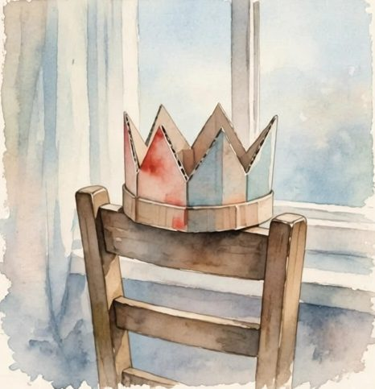
A cardboard crown resting on a chair by a window, river light coming through.
At six, the dreams are not yet ambitions; they are assignments the world has plainly handed out and the child has plainly accepted. Somebody will have to keep the lighthouse. Somebody will have to sail the ship, dig the treasure up, talk the animals through their troubles, and at six there is no committee and no shortlist — there is the child, available, and the post, vacant, and the matter settles itself before breakfast. The boats folded at six are the bluntest in the fleet: enormous destinations, no provisions to speak of, and a confidence in the hull that later folders will spend years trying to recover and never quite manage.
The scale of things at six deserves its own entry in the register. The river is the whole water of the world. The far bank is a foreign country. Next summer is a date so distant and so certain that a whole life can be planned against it without a single hedge. Dreams folded inside that scale come out sized to match it, which is why the six-year-old's boat looks, from the far bank, either glorious or absurd and never anything in between. It was drawn against a world in which the child was small and everything else was possible. The proportions were correct for the chart in use.
The keeper shelves the six-year-old boats together, at eye height, where the light from the door reaches them first. Of all the fleet they fade the fastest in memory, because six is far water, and yet their influence runs under everything launched later like a first current under a river. The professions chosen at twenty, the voyages attempted at forty, the quiet wants of sixty — soundings keep finding six at the bottom of them. The house therefore treats this shelf as ballast rather than archive. What was wanted at six does not have to be wanted now. It only has to be acknowledged as the first true thing the ship ever carried.
14The Seriousness of Small Captains
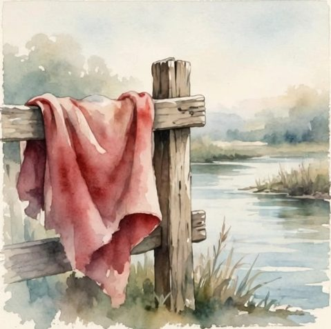
A cape of faded red cloth draped over a fence post, the river running beyond.
Small captains are serious, and the house's second hall opens with their defense. A child in command of a boat — a real one of planks and rope, or a folded one, or one drawn in the margin of a lesson — does not play at command. The orders are real orders, given in a real voice, to a crew whose rations and morale are genuinely the captain's concern until supper. Grown visitors smile at the remembered gravity of it, the salutes, the logs kept in crayon. The keeper does not smile, or smiles last. Gravity was the cargo. The boat was built to carry exactly that: the experience of mattering to a voyage.
Consider what the small captain is practicing, there at the waterline, in the years before anyone hands him anything heavier than a paper hull. He is practicing responsibility in its lightest seaworthy form: check the weather, mind the crew, bring everybody home. He is practicing departure and return. He is learning that a vessel goes where it is steered, most days, and that some days it does not, and that both facts can be entered in the log without panic. The professions of later life will teach techniques. The paper fleet taught the posture first, and posture, in any weather, is most of what command turns out to be.
So the register forbids the diminutive. These were not little dreams because their captains were little; they were full-sized undertakings run by short crews on the only water available. The house keeps their charts without a single condescending note in the margin, and the keeper, entering a new six-year-old boat, writes its destination in the same hand used for the great professions two halls down. Any visitor who finds that funny is invited to remember who folded the boat he himself arrived on. The laugh, when it comes, is the fond kind by then, and the first rule holds, and the fleet rides a little higher in the light.
15Borrowed Maps
Many of the boats in this hall were folded around borrowed maps, and the house keeps the maps with the boats, because the two explain each other. A borrowed map is the chart a dream was folded from when the folder had not yet drawn one of his own: the atlas spread on the library floor, the story heard at bedtime, the older brother's certain knowledge of where the river goes. The destination on such a boat is real ink, but the coastline is secondhand. The child aimed at a country he had mostly been told about, in words mostly borrowed, and launched anyway, which is the only way any first voyage in history has ever begun.
Borrowed maps are neither shame nor scandal in the register; they are the standard issue of childhood. Nobody under ten owns a chart of anything. The whole art of those years is borrowing well — taking the story's coastline and testing one's own small boat against it, learning where the telling and the water agree and where they politely part. Some borrowed maps turn out, years later, to have been drawn by adults with hopes of their own folded inside them, and those the house handles under a separate courtesy, two halls down. Most were lent in love, the way all first maps are lent, and returned worn at the creases.
What the keeper asks visitors to notice is the moment, somewhere in every borrowed-map voyage, when the folder stops copying. The coastline is the story's; then a bay appears that no story mentioned, an island rises where the atlas showed open water, and the chart quietly becomes the child's own. The house can date some boats by that island. It is usually small, usually impractical, and always drawn in a firmer hand than everything around it. Borrowed maps get a dream launched. The first island of one's own is where the dream starts, in the keeper's phrase, to take on water of its own — and every later chart in a life is drawn in the hand that learned itself there.
The Boathouse Desk
One desk receives all correspondence for this house — questions, corrections, and word of any boat on the shelves: a dream remembered whole, a profession once sworn to, an impossible one fondly kept, and how the fleet looks from the far bank. It is read in the order it arrives.
16Costumes and Cardboard
A toy telescope of brass and cardboard on a windowsill, pointed at the evening sky.
Before the boats could sail, they had to be crewed, and the crews were assembled from costumes and cardboard. The captain had a hat. The explorer had a telescope of brass and cardboard that magnified nothing and revealed everything, because looking through it in the right posture was ninety percent of exploration. The strongest child on the street required only a towel for a cape and a fence post to be measured against. The boathouse keeps a shelf of these provisions beside the boats, because the house understands what the far bank forgets: the equipment was never the joke. The equipment was the earnest made visible, worn outdoors, in public, without a flicker of embarrassment.
Cardboard deserves its own line in the register. It was the shipyard material of childhood: free, infinite, workable with blunt scissors, and loyal. A cardboard box was a boat, a fort, a shop counter, a cockpit, and a house of one's own, sometimes in a single afternoon, and it held its shape exactly as long as belief was applied to it. Dreams folded in those years came out of the same stock. They were not built to survive weather; they were built to be built, launched, reimagined, and built again. Judging a cardboard dream by the standards of an oak hull is a category error the keeper is paid, in tea and quiet, to prevent.
What strikes the keeper most, shelving the costumes, is how completely the child inhabited them. The towel cape was not pretend courage; it was courage, issued in the only size the quartermaster stocked. The cardboard telescope was not pretend astronomy; it was the decision to look up, with an instrument, on purpose, every clear night. Later life would supply better equipment and, the register notes drily, a great shortage of the posture that made the cheap equipment work. Visitors leaving this shelf often go quieter than they came. Somewhere behind them, folded small, is a cape they once wore as if it were real, because at the time, in every way that mattered, it was.
17The Future Was Next Summer
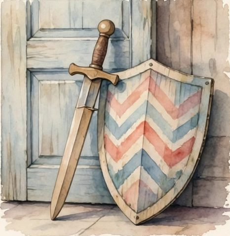
A wooden sword and a shield of painted cardboard leaning by a door, ready for morning.
The future, in the launching years, was next summer. Not someday, not after school, not in the long haze where grown plans are stored — next summer, a season with a smell to it, near enough to plan provisions for and far enough to hold anything. The boats in this room of the hall were all folded against that date. The voyage would happen when the days were long. The treehouse would rise when the tree was in leaf. The expedition waited only for the holidays, which were coming the way weather comes, certainly and on a schedule nobody needed to check twice because everybody already knew it by heart.
There is no impatience in these boats, and that is their marvel. Next summer, to the folder, was not a delay; it was a berth reserved. The dream sat at its mooring in perfect confidence, neither doubted nor hurried, fed now and then with a drawing or a conversation under a blanket. Grown life will later invent deadlines, and with them the whole machinery of lateness — the plan behind schedule, the self behind the plan. The launching years knew nothing of it. A dream awaiting next summer was not behind anything. It was moored in the correct season, and the season, in those years, had never once failed to arrive on time.
The keeper keeps a calendar from those years on the desk, though calendar is a grand word for a page of months with one season ringed. When visitors grow wistful at this shelf — and they do; this shelf does it more reliably than any other — the keeper shows them the ringed page and says the house's gentlest sentence: the summer did come. It came every year, on time, whether the boats were ready or not. What was launched in those long days is out on the water still, in forms the far bank is only now learning to read. What waited is on these shelves, unembarrassed. A reserved berth, the register concludes, is not an empty one.
18Told at the Table
Many of the fleet's launchings were announced at the table, between the soup and the clearing away, in the tone of a shipping report. I am going to sail around the world. I am going to keep a lighthouse and a dog. The table received these bulletins the way harbors receive weather: sometimes with full attention and a request for the chart, sometimes with the distracted kindness of people passing the bread, sometimes — the register does not flinch from it — with a laugh that was meant to be fond and landed, in one small logbook, as the first squall the boat ever met. Tables are the first public a dream ever faces, and their weather shapes the fleet for years.
The house is careful here, and the keeper asks visitors to be careful with it. Most tables did their best with what arrived on them. The adults at those tables were steering their own weather, much of it uncharted, and a child's announcement of the lighthouse service could sound, to a tired ear, like one more thing to worry about in a world already generously supplied. The register records responses without grading them. A dream told at the table and met with silence was not sunk; it was launched into a headwind, which is a different entry, and many a boat on these shelves made its best time in exactly that weather.
What matters to the house is that the telling happened. A dream spoken aloud at a table has crossed the first real water — the distance between the folder's chest and the open air — and that crossing, once made, cannot be unmade by any weather that follows. The child who announced the voyage has done the bravest part of voyaging before the hull is even folded. So this room of the hall is set as a table is set, plainly and in welcome, and the keeper leaves a chair free at it. Some visitors sit down without knowing why. The register offers no explanation. It simply enters the date, and the name of the boat, in the hand reserved for launchings.
19The Friend Who Was Coming Too
A stack of adventure books tied with string, waiting on the jetty in the morning light.
A great many boats in this hall were folded for two. The plan, as entered in the register again and again, in different hands and identical ink, included a friend who was coming too: the berth beside the captain's was reserved, the provisions were calculated for a crew of two, and the destination itself was chosen partly for how it would sound reported back across a garden fence. Childhood's voyages were rarely solo expeditions. They were joint ventures, sealed with the full legal apparatus of the playground, which is to say a handshake, a shared secret, and the division of future duties — one to steer, one to watch for the interesting weather coming.
The keeper is sometimes asked what became of the other berths, and answers honestly: the register does not track crews, only boats. Friends embark on voyages of their own, some parallel for years, some rounding a different bend by September. None of that cancels the original crew list. A dream folded for two was not folded wrong when it sailed, in the end, with a crew of one, or rested on a shelf with the second berth still made up. The intention is part of the cargo, and the house keeps intentions in good order. Many a grown visitor, reading an old name in the log, has thought of the friend first and the destination second, and the keeper considers that a correct reading of the list.
There is a berth economics here the far bank understands better than it admits. The dreams that survive longest in memory are so often the ones that had a witness — somebody who heard the announcement, shared the chart, and could be reminded of it decades later across a different table. A boat folded for two carries its own witness aboard. Even resting on the shelf, it is not entirely quiet; it holds the shape of a conversation. The keeper shelves these boats in pairs where the register allows, port to starboard, the way they were launched. Whatever water the two crews are on now, in this house they set out together, and the log keeps it that way.
20Written Down Nowhere
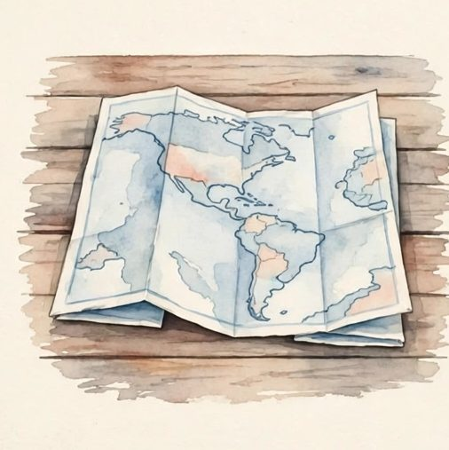
A folded map with coastlines only, no words, resting on a wooden table by the window.
For all the announcing at tables, most of the fleet was written down nowhere. No log was kept, no chart was filed, no copy was made of the plan; the dream existed entire in the folder's head and hands, and its documentation perished, as the keeper says, in the usual shipwreck of growing up. This is why the boathouse exists. A house had to be built to hold what no paper held, and its register is a reconstruction — names recovered from hull memories, launchings dated by the smell of the season, cargoes listed as faithfully as a harbor can list cargo that arrived forty years ago in somebody's pocket and was never once declared.
The absence of records cuts two ways, and the house honors both. It means the fleet can never be audited, which protects it: no visitor can be shown documentary proof that a dream was smaller, sillier, or later than remembered. It also means the fleet can never be fully recovered, which humbles everyone. The keeper works in estimates and is honest about them, entering recovered names in pencil, older recoveries in ink only where two memories agree. Whole shelves of the launching years stand empty between the boats, and those gaps, the register says, are also part of the collection. A house that claimed completeness would be lying about the water it stands on.
So the visitor who arrives hoping to verify a dream — to check the youthful plan against some filed original and settle, once and for all, what was really wanted — leaves with something better than verification. He leaves with permission. Since nothing was written down, the dream belongs now to the keeper of the memory, to be entered in the log in the hand he has today. The house will shelve it as reported, thank it as reported, and rest it as reported. The river keeps no archives either. It keeps the water moving, and trusts the banks to remember what shores they are.
21Every Dream Had Weather
Every dream had weather, and the launching years are shelved by it in this house: fair-weather boats and foul-weather boats, each marked by the climate of the household it was folded under. Some children folded in long calms — a house at peace, a garden gate that swung free, adults whose own weather was settled enough to make room for a captain's. Some folded in squalls, quickly, in corners, with the whole enterprise kept under a bed like a radio in an occupied country. The boats are the same paper throughout. The hands, the keeper notes, shake differently, and the register has learned to read a launching by the steadiness of its creases.
Weather explains more of the fleet than talent ever will. A dream launched into a fair season grows sails; a dream launched into a hard one grows ballast — secrecy, patience, a genius for small spaces. Neither growth is a defect. The harbor at the bend is full of proof that foul-weather boats are often the best-built in the collection, folded tighter against the damp, their names written small and deep where the rain could not reach them. When a visitor apologizes for the modesty of an old dream, the keeper asks about the season before admiring the boat. The size of the vessel is usually the size the weather allowed, and the allowance was rarely the folder's to set.
The house keeps no judgment on households either; weather is weather, and it passes over just and unjust roofs with fine impartiality. What the keeper watches, in the long register, is what the weather taught each boat to do. Fair-weather craft learned distance. Foul-weather craft learned endurance, repair, and the art of being launched again from wet paper. A grown life needs all of it, usually in the same decade. So this shelf of the hall is arranged not by destination but by climate, and it is, the keeper says, the most honest shelf in the building: nobody chose their weather, and everybody here sailed in it anyway.
22The River Was Closer Then
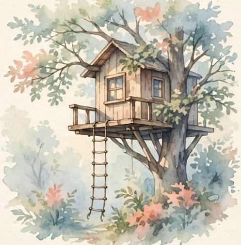
An empty treehouse in morning light, its rope ladder hanging still above the grass.
The river was closer then. This is not sentiment; it is surveying. In the launching years the water stood at the end of the garden, at the bottom of the street, at the edge of every walk, and a boat folded at breakfast could be racing the current by lunch. Distances were measured in the units that mattered — how far a voice carries, how far a stone can be thrown with intent — and the whole geography of ambition fitted inside them. The world beyond the bend was not smaller then. It was nearer, because the child had not yet learned to insert the adult distances: the applications, the permissions, the years of preparation, the correct channels, between the wanting and the water.
Proximity changed the dreams themselves, and the shelves show it. Boats folded when the river was close are impatient craft in the best sense: no committee stages, no preliminary voyages, just the folder, the hull, and the element, introduced to each other the same morning. Later boats in the fleet carry the marks of inserted distance — training schedules, savings, five-year moorings — and many are the better for them. But something was traded, and the register keeps the price where it can be seen. The closer the river, the shorter the distance between a person and the evidence that wanting and doing were once the same afternoon's work.
The grown visitor knows the rest of the geography by heart. The river did not move; the maps did. Roads went in, then fences, then the whole surveyed apparatus of a practical life, until the water that once stood at the garden's end requires a drive, a free weekend, a reason. The boathouse stands at the bend partly as a protest entered in the landscape: come back down the path and the river is where it always was, close enough to wet a sleeve in. The keeper maintains the jetty in good repair for exactly this demonstration. Some distances, the house insists, were only ever drawn on paper — and paper, of all things, this house knows how to refold.
23Small Boats, Enormous Seas
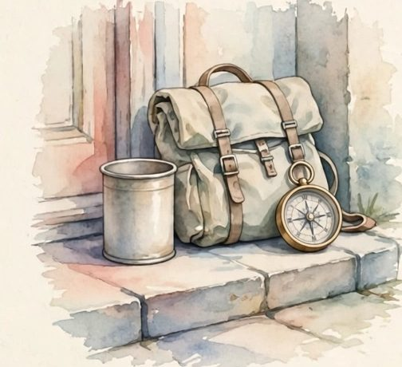
A tin cup, a knapsack and a compass set out ready by a doorstep at first light.
Small boats, enormous seas: the motto might hang over the launching years entire. Nothing about the proportions troubled their captains. A hull of folded paper was a ship because it floated and carried a name; the sea it crossed was enormous because it was wet, moving, and not entirely predictable, and no one at the waterline required further credentials from either. The arithmetic of childhood ambition was gloriously unembarrassed — the smaller the boat, in fact, the larger the sea it was expected to cross, and the register records no instance of a folder apologizing to a visitor from the far bank for the tonnage of his vessel.
Enormity, the keeper observes, is mostly a question of where the observer is standing. From the bank of forty, the sea of childhood looks like a ditch and the boat like a page. From the bridge of the small captain, the ditch ran with real weather, the current took real cargo, and a sinking was a sinking in full. Both observers are reporting accurately, which is why the house keeps its shelves at a child's eye height in this hall and asks tall visitors to bend. Judgment changes with altitude. The keeper has no quarrel with the view from the far bank; the keeper simply refuses to let it be the only survey the fleet ever gets.
There is a working lesson folded into these small hulls, and the grown keepers of practical lives find it on this shelf more often than they expect. A vessel does not need to match its sea. It needs to be sound, named, and actually launched. Most of what the far bank calls underprepared was, in the launching years, simply unpostponed. The fleet's small boats crossed their enormous seas daily, on schedule, in crayon-documented triumph, and the ones that sank sank honestly and taught the yard to fold better. The house shelves them without tonnage marks. In this harbor, the register concludes, every boat that floated was a ship, and every captain was the captain.
24What the Child Knew for Certain
What did the child know for certain? The hall closes with the register's shortest and most stubborn list. The child knew the voyage was worth making. The child knew the crew by name and the destination by heart. The child knew that provisions matter, that weather must be respected, that a boat should be watched until it rounds the bend, and that some things lost overboard are gone for the day and some are gone altogether, and that a captain notes the difference and sails on. All of this was known without instruction, at full strength, in the years when almost nothing else was known at all — and the house has never located a later list that improved on it in the essentials.
Certainty has a poor reputation on the far bank, where it is confused with its louder cousins. The child's certainty was a quiet instrument, more like a compass than a flag. It did not argue. It simply pointed, every morning, at the same few true things: this is the boat, this is the water, this is who is coming, this is where we are bound. Doubt, when it arrived in later years, arrived as weather often arrives — genuinely, and with things to teach. But the register notes that doubt never once improved the pointing. The grown keeper of a life still steers, most mornings, by the list made at seven, whether he recites it or not.
So the house keeps the list in the register's front pages, ahead of the launchings, where a chart belongs. Visitors are welcome to copy it. Most find, reading it over the keeper's shoulder, that they can still recite it from memory, which is the house's favorite kind of evidence — the kind that arrives carrying its own proof. What the child knew for certain has not been refuted by the years; it has only been mislaid among louder knowledge, the way the fleet itself was mislaid. Retrieval, the keeper says, closing the hall, is the entire business of the boathouse, and business, at this bend, is quietly good.
25To Be an Astronaut
A model rocket of painted tin standing on a shelf, small stars painted on the wall behind it.
The hall of the great professions opens, as it must, with the astronaut. In the launching years this was the fleet's flagship ambition, the boat folded largest and launched highest: to leave the river altogether, to ride fire out of the sky's ceiling and look back at the whole blue chart of home from outside it. The keeper shelves the astronaut boats under the roof's highest beam, where the light is thinnest, and treats them with the particular respect due to a dream that asked for the maximum distance available to a human want. Every age has its highest shelf. For a generation of folders, this was it, painted silver, with portholes.
The register is unembarrassed about what drew them. It was not science, mostly, and it was not glory, entirely. It was the view. The child who folded the astronaut boat wanted to see the whole of it at once — the river, the town, the curve of the world — the way a captain turning at the bend wants the full sweep of the valley. A great deal of the fleet, examined closely, is that same want wearing different uniforms: to get high enough, far enough, or quiet enough to see the pattern entire. The astronaut simply filed the request in its purest form, with the fewest apologies, and a helmet.
Most of these boats came home to shelves in houses whose keepers became engineers of smaller systems, teachers of the very sky that was not entered, parents pointing out the bright road of the space station to children of their own at dusk. The house counts none of that as a failed launch. The want was to go up and see. Seeing happened, in other currencies and at other altitudes, and the register enters it without an asterisk. And a few of the boats are still, in the keeper's phrase, in pre-flight — their folders, at fifty, booking the dark-sky weekends and learning the constellations at last. The shelf under the beam stays ready. This fleet has never once confused late with never.
26To Sail Around the World
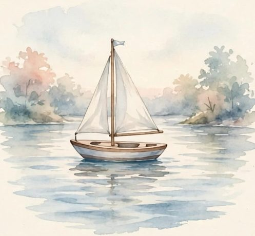
A toy sailboat with a white sail on a calm river at dawn, making its slow way out.
To sail around the world: the register holds more of these boats than of any other single destination, and their charts are the house's glory — whole oceans ruled onto notebook paper, provisions listed in a hand that improved down the page, the crew's names lettered with the care usually reserved for treaties. The child who folded this boat was not planning an escape. He was planning the opposite: to go all the way around and come back to the same jetty with the whole world carried home like a story that could be set on the table, steaming, for everyone who had stayed. The voyage was a circle on purpose. Home was the point of it.
Of all the great professions, this one leaves the most visible wake in grown lives. Soundings find it everywhere: in the keeper of maps who never left the county, in the night-shift nurse who reads atlases the way other people read letters, in the cook whose shelves circumnavigate the world in jars. The dream asked for the whole circle, and life, which rarely grants wholes, granted arcs — and the register's finding, entered after long observation, is that the arcs were sailed in the same spirit as the circle was planned. The wanting taught the wanting's owner to navigate: by stars, by weather, by the patience to wait out a calm without calling it the end of the voyage.
A few of the boats are still out. The house keeps their berths swept and their names at the top of the register, because this destination, alone among the great professions, keeps being quietly achieved by its folders in retirement, in installments, in other people's boats and occasionally in their own. And whether the circle closes at seventy or never quite closes, the keeper refuses to grade the chart. A life spent aiming at the whole world is measurably different from a life that never unfolded the map. The difference is visible from the jetty. It is most of what the boathouse was built to keep in view.
27To Be a Vet, a Doctor of Beasts
To be a vet, a doctor of beasts: the tenderest commission in the hall, and the one with the longest patient list. The child who folded this boat had usually already practiced — on the dog, on a succession of unimpressed cats, on birds delivered to the doorstep in cupped hands with the full ceremony of an emergency ward. The dream was not abstract. It had fur. It had names. It was the resolve, formed early and held with both hands, that the suffering of creatures who cannot describe it would be met by somebody competent, and that the somebody, pending a better candidate, was obviously the child with the toy stethoscope.
The keeper notes what this dream was really ordering, because the register has watched its folders for forty years. Underneath the white coat in the drawing was a simpler and larger want: to be the kind of person at whose arrival things get better. Watch the grown outcomes with that chart in hand and the sideways arrivals crowd the page — the nurses and teachers, the mechanics whose customers calm down at the sound of their competence, the friends telephoned at midnight by the whole street when something living is in trouble. The practice changed species, often. The arrival did not. Patients still gather, in every port, where that particular keeper of a life docks.
And the dream keeps a ward in the house itself. More than one visitor has come down the path for this boat alone, having spent a working life, perhaps, in ledgers, and wanting to set eyes on the commission before some inner closing time. The keeper brings it down without ceremony. The stethoscope is drawn on still. The patients are listed still, in order of severity, none of them forgotten by the only doctor they ever fully trusted. Whether it sails again in retirement — in shelters, in foster litters, in a grandchild's menagerie — is the visitor's weather. The house's entry is simpler, and final: this boat was never about a profession. It was about being, on purpose, a mercy with an address.
28To Keep a Lighthouse
A small stethoscope and a bowl set out for a toy animal clinic, a stuffed bear sitting upright and patient.
To keep a lighthouse: the quietest of the great professions, folded by the children who watched the room before joining it. The lighthouse keeper of the dream stands at the top of a tower at the edge of the weather, keeping one light, for strangers, all night, in a house with a spiral stair and a kettle and a cat. It is the only profession in the hall whose entire glory is staying still. The sailor dreams cross oceans. The lighthouse dream crosses nothing; it holds a position so that others can cross, and the child who folded it had already understood, at eight, that some lives are measured by what they allow to pass safely rather than by where they themselves have been.
The register has a soft spot for this shelf, and the keeper admits it breaks the house's impartiality by exactly one shelf. These folders grow, with eerie consistency, into the people who keep the lights of ordinary life: the neighbor whose porch is lit, the colleague who stays late so the new hand is not alone with the machinery, the friend whose number is answered at the bad hours. The tower was never built. The light, somehow, is kept — nightly, without a roster, in a dozen small jurisdictions of care. The house enters these as fulfillments, full stop. A dream that wanted strangers to come safely home, fulfilled by a life that strangers rely on in the dark, has not been fulfilled sideways. It has been fulfilled precisely, minus only the tower.
And the tower, the keeper adds, closing the log on this shelf, was probably never the cargo either. What the child wanted from the top of those spiral stairs was the arrangement entire: the solitude with a purpose, the weather as a colleague, the one clear duty burning at the top of the house. Grown keepers of this dream find the arrangement in pieces — a night desk, a quiet trade, a room of one's own at the top of a life — and assemble it without ceremony. The light they keep is real. The ships are real. Only the chart calls it something else, and the boathouse, which corrects charts for a living, enters the correction and moves on.
29To Drive the Night Train
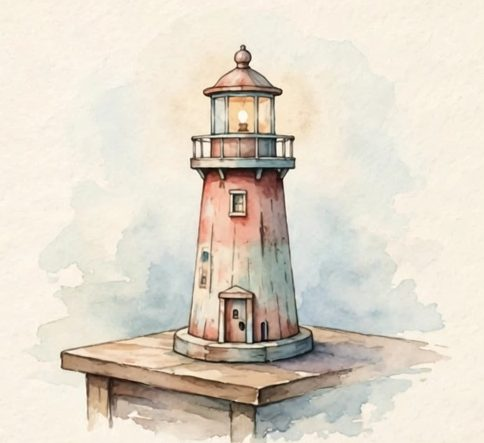
A miniature lighthouse of painted wood on a table, its small lamp lit against the evening.
To drive the night train: the profession of motion in the dark, folded by children who pressed their faces to lit windows and understood that the train was the best story in the world — a river of light that ran on rails through the sleeping country, carrying people who were all, for the length of the journey, between one life and the next. The driver of the dream sits at the front of that river with his hand on the lever, seeing the line first: the signals, the crossings, the small stations lit like punctuation. It is a dream of responsibility at speed, in the dark, on a road made of certainty.
Certainty is the cargo here, and the keeper names it because the shelf explains so many later lives. The child who folded the night train loved the rails as much as the motion. Here was a way to go far without ever being lost, to run all night through weather and arrive, by timetable, exactly where the line said. Watch the folders grown and the rails appear under every career: the pilots and dispatchers, the bakers up at three, the keepers of systems that must move in the dark so that morning can happen on schedule. The profession dispersed into a hundred timetables. The hand on the lever, the register testifies, is recognizably the same hand.
The boats on this shelf are folded long, with a stripe down the side, and the keeper keeps the hall's window open a crack on this room so the real railway, far off, can be heard some nights doing the dream's old work. Visitors who folded this one tend to stand a while. There is nothing to apologize for in a want that ran, all its life, on time — and nothing unfinished about it either, whatever line the folder ended up driving. The night country is still crossed nightly by people carrying other people between one life and the next. The child wanted to be one of them. The register checks the roster of grown lives, and enters, beside boat after boat: present.
30To Be Famous
To be famous: the boat in the hall with the largest sail and the smallest cargo hold, and the keeper shelves it without a smirk, because the first rule holds in this room most of all. The child who folded it did not want fame the way the far bank prices it — the photographs, the noise, the machinery of being looked at. The child wanted the simpler thing underneath, in the years when being seen was still mostly a pleasure: to stand in the light in front of everybody and have the thing he could do be the thing everybody wanted to watch. It is a dream about being received at full size, applauded by the village entire, and sent home to supper a hero.
The register follows these folders with interest, because their grown lives split so cleanly. Some found their stage at full size and discovered the light warmer in memory than in weather; the house keeps their boats kindly and asks no questions. More found it sideways, in the currencies this boathouse exists to honor: the teacher whose classroom is a small country that adores its ruler, the nurse whose entrance genuinely changes a ward's weather, the grandfather whose stories hold a table of eleven in complete silence. Being received at full size, by the people actually in the room, turns out to be fame with the addresses filled in. The register enters these as arrivals, tonnage notwithstanding.
What remains delicate about this boat is the wanting itself, which the far bank often handles with embarrassment, as if wanting to be seen were a leak in the hull. The keeper patches that reading wherever it appears. The wish to be witnessed is one of the fleet's oldest cargoes; half the boats in the house carry a little of it as ballast. A child who dreams of the stage is practicing, in advance, the belief that what he has is worth an audience — a belief the grown world will charge him rent for, monthly, in doubt. The house therefore keeps the famous boats in good light, sails up, unashamed. Wanting the light was never the failure. The register knows of no boat in the fleet that sank from it.
The Boathouse Desk
One desk receives all correspondence for this house — questions, corrections, and word of any boat on the shelves: a dream remembered whole, a profession once sworn to, an impossible one fondly kept, and how the fleet looks from the far bank. It is read in the order it arrives.
31To Dig for Treasure
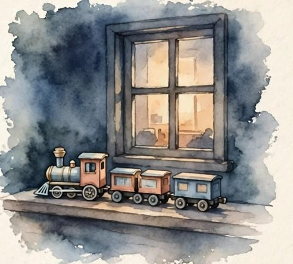
A toy train on a windowsill at night, one window of the room behind it lit warm.
To dig for treasure: the profession with dirt under its nails, folded wherever a garden, a riverbank, or a stretch of waste ground offered the one thing the dream requires — a surface that might, with a spade, give up a secret. The child who folded this boat believed the world was salted through with buried significance: coins, chests, the leavings of earlier and more interesting centuries, all waiting at spade depth under the ordinary grass. The map was the treasure's first installment, usually marked with an X in a hand trying hard to look like somebody older and more pirate, and the digging itself was never the chore. The digging was the ceremony.
The keeper files this dream under seeking rather than finding, and the register's long watch supports the filing. The folders of treasure boats grow into the people who cannot leave a surface unexamined: the historians and mechanics, the gardeners who read soil like correspondence, the cooks, the genealogists, the friends who ask a second question. What the dream was really ordering was a life in which the visible layer is never the whole account — and that life, once ordered, tends to arrive even when the chest does not. Some of these folders did find treasure, of the spade-and-riverbank kind, exactly once, at nine, in the form of a bottle, a badge, a coin of no nation. The register records those finds in ink. They were enough. They were proof of seamanship: the world, sounded early, was indeed salted.
And a few of the boats are bought back, in later years, by metal detectors and beachcombing retirements and grandchildren conveniently aged for expeditions — the dream returning at a smaller size, asking only for the ceremony again: the map, the spade, the long odds, the grass giving up its bottle top like a secret. The house watches these relaunchings with undisguised pleasure. Of all the great professions, treasure keeps the best terms with age, because it never required the finder to be young — only to believe the surface is not the account. The X, the keeper notes, was never marking the spot. It was marking the digger: this one looks twice. The register underlines that entry, one of the few it allows itself, and shelves the boat spade-up.
32To Be the Strongest
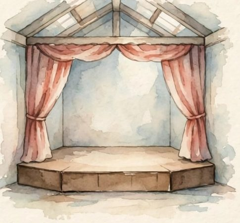
A stage of cardboard with a faded coral curtain, standing empty in attic light.
To be the strongest: the plainest boat in the hall, folded without decoration, because strength in the launching years is not a metaphor and needs no costume beyond a towel and a witness. The child who folded it wanted the simplest contract in the world drawn in its simplest terms — to be able: to lift the stone, carry the load, hold the door against whatever was outside it, and never again be the one who must stand and watch while someone smaller or older or more beloved struggles with a weight. Read the register of these launchings and a pattern surfaces quickly. Behind most of them stands a specific scene: something heavy, someone straining, and a child doing the arithmetic of helplessness and resolving, in full, to reverse it.
The grown outcomes of this dream repay attention, because strength turned out to have more currencies than the launching years could price. Some folders did become the family's lifters and carriers in the literal ledger, and the house honors the tonnage. Far more became strong in the registers that actually get drawn on: the ones who can be telephoned, who can sit upright through the long meeting and the longer night, who can hold a household's weather without handing it back. The dream asked for capability in an emergency. Life, which is mostly emergencies of the quieter kind, has been cashing the order ever since. The register enters these boats as fulfilled at a rate that surprises even the keeper.
What the house will not do is read this dream as mere vanity about arms and stones, the far bank's lazy entry. The strongest child on the street wanted, almost always, to be a shelter that moved. It is among the most honorable commissions in the fleet, and its folders are the visitors who cry least at the shelves and help most with the carrying when a boat needs to come down from a high shelf. The keeper, who is no longer young, has learned to shelve the new arrivals at heights that assume such help. The dream, in the end, staffed its own boathouse. The register can imagine no cleaner fulfillment than that.
33To Run Away with the Circus
To run away with the circus: the only profession in the hall that begins with a departure from home as its first duty, and the boats are folded accordingly — light, fast, with everything unnecessary left standing on the jetty. The child who folded this one had done the arithmetic that the far bank forgets: the circus was the one institution in the known world where the unusual was the qualification. Too tall, too bendy, too loud, too dreamy, possessed of a useless and glorious skill practiced for years in the garden — somewhere there was a ring where exactly that was the act, a wagon with your name in lights, and a road that never once asked you to become more ordinary.
The register tracks these folders with respect, because the dream's request was precise and many of them met it in currencies the circus itself would recognize. The road crews and touring bands, the seasonal workers who follow harvests and festivals and ice, the market traders with their stalls folded like tents — the traveling life claimed a good share of them outright. Others took the circus indoors: into theaters and kitchens and classrooms run as rings, where the unusual child they had been would have been hired on sight. The want was never really for sequins. It was for a world organized so that the odd gift is the entry ticket, and that world, the register testifies, is buildable at many sizes, most of them smaller than a big top and all of them real.
And the running away itself deserves its line, because the house does not flinch from it. Some of these boats were folded in houses that needed leaving, at least in imagination, and the circus was the kindest available door: a leaving that was toward applause rather than away from weather. The child who plans an escape into a ring of light is not betraying the house; he is charting, early, the difference between a home and a harbor. Most came back for supper. All of them kept the chart. The keeper shelves these boats by the door, where the light is, in honor of the fleet's most honest compass: the one that pointed, from the beginning, at a life sized to the person living it.
34To Be a Detective
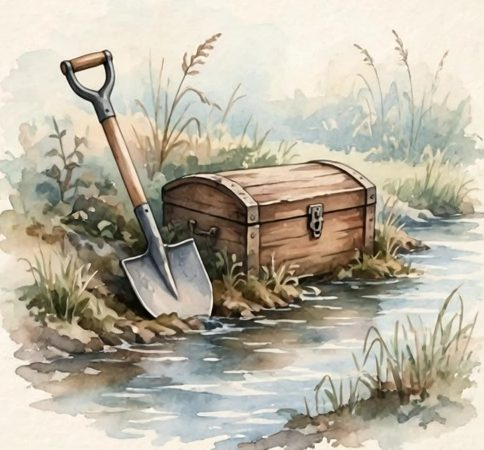
A shovel and a wooden chest half-buried at the riverbank in the morning mist.
To be a detective: the profession of the notebook and the long look, folded by the children who noticed that the grown world was full of unexplained events and low-grade mysteries nobody seemed assigned to solve. The missing bicycle. The gate that stood open at dawn. The adults' conversations that stopped at a certain altitude of child. The detective of the dream proposed to make a living — a life — out of the noticing itself: to follow, to deduce, to arrive at the truth of the matter with a magnifying glass and an unhurried manner, and to say it plainly at the end, in a room where everyone has gathered, whether they wanted to gather or not.
The register observes that this dream rarely goes unfulfilled; it goes underground. Its folders become the people in every office and family who are quietly consulted when something does not add up — the ones who keep the documents, remember the sequence, and can be relied on to have noticed the detail in the third paragraph. The profession dispersed into auditors and editors, mechanics who read a machine by ear, friends who ask the question the room was avoiding. None of them carries the card the dream promised. All of them carry the practice, which was the actual cargo: sustained, loyal attention to what really happened, in a world that would prefer a quicker story.
There is a tenderness in this shelf that visitors remark on. The child detective wanted the truth, but wanted it the way the early stories taught it — as a form of rescue. The mystery solved meant the lost thing found, the wrong person cleared, the household set back on its true keel. The grown keepers of this dream, doing their noticing in plainer clothes, are still in that line of work more often than their job titles admit. The house enters the shelf's verdict without dissent: of all the great professions, detection is the one whose tools — look longer, write it down, believe the evidence over the noise — a person uses every single day of a life, in every port, whether or not a case is ever officially opened.
35To Invent Something
A magnifying glass resting on an open blank notebook, a folded cap beside it on the desk.
To invent something: the boat with the least finished drawing in the hall, because its folders were always modifying the design in the margins, and the keeper preserves every version, including the ones that plainly violate the arrangement of the physical world. The child who folded this boat had looked at the ordinary objects of the house and found them all, without exception, improvable: the stairs wanted a slide, the bicycle wanted weather of its own making, the umbrella was an obvious first draft. Invention, in the launching years, is not a profession so much as a standing objection to the finality of things. The world had been issued. The folder respectfully returned it for alterations, with sketches.
The register follows these boats into workshops and kitchens and a thousand small patents of daily life, most of them never filed anywhere but in use. The folders become the people whose houses run on ingenious arrangements, whose workplaces quietly depend on the jig, the shortcut, the re-purposed shelf bracket holding up half a system. A few did reach the patent office and the catalogue, and the house is glad for them, in ink. But the keeper insists on the wider ledger: the dream asked that the world be alterable by one's own hands, and every life on this shelf answers with a home full of alterations. By the dream's own terms — object, objection, improvement — the fulfillment rate here is among the highest in the hall.
What the far bank gets wrong about this boat is to ask what the something was. Asked at fifty what he was going to invent, a folder will laugh and say he cannot remember, and the register does not record the laugh as an evasion. The something was never the cargo. The cargo was the posture: the refusal to believe that the issued world is the finished world, learned at a workbench of boxes and string before it could be argued with. Postures outlast professions. The keeper, shelving the unfinished drawings with their impossible machines, treats them the way the house treats everything launched in earnest — as working papers of a going concern, most of whose products are still, quietly, in daily service.
36The Professions Change Their Names
The hall of the great professions closes with the keeper's favorite administrative fact: the professions change their names. The lighthouse service becomes the night desk and the answered telephone. The night train becomes every timetable somebody keeps in the dark. The voyage around the world becomes an atlas habit, a kitchen of many coasts, a retirement taken in installments. Visitors arrive at this shelf looking for the professions they ordered and find, shelved under them, the professions they got — and the register's work, in this room, is mostly translation. Read in the new names, the fleet's arrival rate is not the tragedy the far bank reports. It is a harbor full of landings entered in another language.
The names change for honest reasons, and the house lists them without blame. Some professions vanished from the world entirely; the world retires its own boats too. Some were renamed by the folders themselves, at the age when a childhood word starts to embarrass its owner in company — the dream does not die at that age, it goes into plain clothes, and does its work for decades as an interest, a knack, a tendency, a thing he is known for. And some names changed because the dream, examined by an older eye, turned out to have been a description all along: not a job, but a way of standing in the world, which no employer was ever going to advertise and no career was ever going to contain in a single post.
So the keeper maintains a concordance at the desk, cross-referencing the hall: ordered, astronaut; delivered, among other things, a lifelong habit of looking up. Ordered, detective; delivered, the family member who notices. It is not a consolation document. Consolation implies a loss entered somewhere, and the house's finding, hull by hull, is that what arrived under the new names is usually the substance of what was ordered under the old ones — the same want, in working clothes, drawing a wage of some currency or other. The visitor who learns to read the concordance walks the rest of the boathouse differently. Every shelf starts translating itself. That, the keeper says, is when the house has done its real work for the day.
37To Fly Without a Machine
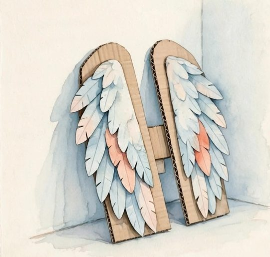
A pair of cardboard wings leaning against a wall, their feathers made of paper.
The hall of the impossible ones opens with the oldest entry in the register: to fly without a machine. Before the professions, before the costumes had ranks and the maps had legends, there was this — the arms spread on a hill or a staircase landing, the run downhill into the wind, the absolute knowledge, held for the length of a field, that the arrangement of the world was about to be personally amended. The keeper shelves these boats highest of all, above even the astronauts, because this dream is the fleet's founding document. It asked for the impossible in its purest form: not a vehicle, not a permission — the body itself, revised, and the sky, entered directly, like water.
The house honors the impossible ones under a doctrine of its own, stated in the register without apology: they taught wanting itself. A child who has tried to fly knows things about desire that no fulfilled wish can teach — its lift, its weather, its honest difference from belief. The flight dream never pretended to be a plan. It was a rehearsal of reaching beyond the given, conducted at full seriousness, in the years when the given had not yet been explained as permanent. Every later ambition in the fleet, however practical its paperwork, flies on wings first tested here, in a field, at a run, against the evidence.
Grown visitors handle this shelf the most gently of any in the house, and the keeper understands why. The flying child is the one portrait nobody wants argued with. Some of these folders went on to aircraft and towers and every legal altitude; the register notes it and moves on, because altitude was never the point at issue. The point was the hill, the wind, the arms out, the moment of full intention before the ground gave its answer. That moment is preserved in this house exactly as launched, unamended by the answer. A dream that taught the wanting, the register concludes, has already done more work than most dreams that merely came true. It sails whenever its keeper, at any age, looks up.
38To Talk with Animals
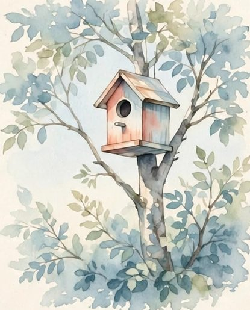
A birdhouse high in a tree, empty and waiting, in clear morning light.
To talk with animals: the commission the child issued to the whole living world, and the second boat in the hall of the impossible. It rested on a suspicion every folder of it remembers forming — that the dog knew more than the household credited, that the horse's opinion of the day was available and being withheld only by a technicality of language, that the birds were filing reports. The dream proposed to fix the technicality. What the animals would say, once addressed properly, was expected to be worth the trouble: news from the other side of the visible, delivered by its residents, in the first person at last.
The keeper is often asked, at this shelf, whether the dream came true, and answers with the register open. In its own currency, partially, daily, and without ceremony. Its folders become the people animals actually talk to, in the only dialect available — the ones who can read a room of creatures the way others read print, who know which silence is contentment and which is the other kind. Decades of attention is a language; the child who folded this boat enrolled in it early and never withdrew. What was wanted was conversation. What arrived was fluency. The house, which trades in sideways arrivals, records this one as among the most complete in the hall, tonnage of wonder included.
And the wonder is the point the house insists on, because the far bank tends to file this dream under charm and move on. To talk with animals was never a small wish. It was an early, serious proposal that the world is inhabited from the inside by others — that the dog's day is a day, the bird's errand an errand — and that a person might live answerable to that fact. The folders of this boat carry the proposal into their grown arrangements more faithfully than most: into how they keep, feed, shelter, and attend. The conversation continues, in the dialect attention speaks. The register enters the dream as ongoing, and shelves the boat, alone in the hall, with its bow pointed at the window and the birds.
39To Be Invisible for a Day
To be invisible for a day: the most modest request in the hall of the impossible, and the one whose small print the keeper reads most carefully. The child who folded this boat did not want power over anyone. Read the register of these launchings and the itineraries are strikingly gentle: to hear what is said at the table after the children are sent from it, to watch the house run its evening machinery unobserved, to move through the world for once without being assessed by it — to be, for a day, pure witness. Invisibility, in the launching years, was mostly a wish for information and rest: the truth of rooms, without the tax of being seen in them.
It is also, the house notes, a wish that tells the truth about its era in a way few dreams do. A child is the most observed creature in any household — watched, weighed, corrected, reported on — and the dream of invisibility is partly the dream of a shore leave from all that regard. The folders of this boat were not hiding from anything in particular. They were practicing, in imagination, the privacy that grown life would later issue them in quantities they could not then conceive, and would sometimes, at midnight in an empty kitchen, remember wanting at exactly this size: one day, unobserved, entirely their own to spend on looking.
The grown arrivals of this dream are the register's quiet pleasure. Its folders become the great noticers of their worlds — the photographers and listeners, the friends who can be told things, the colleagues who see the meeting inside the meeting — because the wish trained the exact faculty it promised: attention without interference. Some even got the day itself, more than once, in the grown currencies of solitude: the empty house, the unpeopled coast, the long train window. The house enters the dream as fulfilled at a rate the far bank would not credit, and adds its own footnote. The child wanted to disappear for a day in order to see everything. He became, instead, the person everyone looks for when they need the world described accurately. The register calls that a fair trade, entered in full.
40To Live in a Treehouse
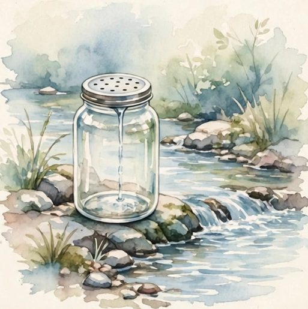
A glass jar with holes in its lid standing empty by a stream, waiting for the day's expedition.
To live in a treehouse: the impossible one that was never entirely impossible, and the fleet knows it — this boat is folded with more carpentry in it than any other in the hall. The dream proposed a specific address: up. A room of one's own raised into the branches, with a ladder that could in principle be drawn, a roof against the weather of below, and a view arranged by leaves. Every folder of this boat can still describe the interior in inventory detail — the shelf, the tin of supplies, the arrangement for books — because the dream was never really about altitude. It was about a jurisdiction: one small country, in the air, governed entirely by its resident.
The register observes that this dream has the highest rate of eventual construction in the entire fleet, most of it at reduced scale and all of it entered without apology. Treehouses do get built, decades late, by folders who became the grandparents and neighbors of new captains — built better than the original drawings, with real roofs, for crews the original captain could not have imagined enlisting. And its other arrivals fill whole shelves: the cabins, the garden sheds with rules, the studies with a door that closes, the boats — actual boats — kept at moorings by people who finally bought their raised room on the water instead of in a tree. The jurisdiction is the cargo. The address was always negotiable.
The house keeps this boat where the window light is strongest, because it is the hall's standing proof that impossible is a weather report, not a verdict. Some of the fleet's dreams were impossible in fact and honored as teachers. This one was impossible only on the current budget of a person aged nine, and it waited, patient as timber, for the budget of a person aged fifty to catch up. The keeper's entry for the shelf is brief and entirely satisfied: check back. A dream that can be described plank by plank, the register testifies, has already been surveyed, and surveyed dreams have a way of getting built — by their folders, or by their folders' grandchildren, in trees whose names the dreamer will never know and would not care about at all.
41A Horse of One's Own
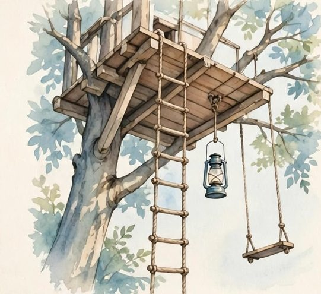
The old treehouse seen from below: rope ladder, a tin lantern, and a swing hanging still in the morning air.
On this shelf rests the wish for a horse of one's own, and the keeper enters it in the register without a smile of apology. It was never only about riding. A horse of one's own meant a large warm creature who knew your step, a mane to bury both hands in, a friend taller than every adult in the house. It meant being trusted with something alive and strong, and being the one person that strength answered to. The wish had the whole stable in it — hay, weather, early mornings — long before it had any arithmetic.
Few of the children who launched this boat ever kept a horse, and the register notes that the wish was answered more often than it was refused. It came back as the bicycle learned by heart, the dog who waited at the gate, the first car coaxed along country roads. The form changed; the wanting underneath it did not. It had always asked for a companion in motion, a creature or a machine that made the world wider and the rider less alone in it. The keeper calls that a full answer in another currency.
So the boat keeps its shelf, hull dry, name legible, and nobody at the boathouse finds it a sad exhibit. To want a horse at eight was to rehearse a kind of love — patient, daily, smelling of weather — that the grown life would later spend on other creatures, other journeys, other mornings. The dream did not fail for want of a stable. It taught the hands what they were for. When a visitor laughs at this shelf, the keeper only nods toward the river: every captain here began by wanting something with a heartbeat in it.
42To Find a Door into Another World
Somewhere in every childhood there was a door that did not belong to the house: at the back of a wardrobe, under a stair, in the hollow of a hedge where the light fell differently. The wish to find it was launched in complete earnest, and the boathouse keeps its boat with respect. The child who checked behind every curtain was not escaping anything. The child was prospecting. Somewhere, the reasoning went, the world must have a second entrance, and it would be a poor sort of world if only adults were trusted with the keys.
The door was never found in the wall, and the register is untroubled by that entry. What the searching built turned out to be worth more than the passage would have been. A child who looks for doors learns the house by heart — every cupboard, every skirting board, every draught that suggests a hidden room. Attention itself was the cargo. Years later the same habit walks into libraries, into new cities, into the first pages of difficult books, still quietly checking whether this, at last, is the way through to the country on the other side of the ordinary.
The keeper has a private entry for this boat: most grown lives do find the door, only it opens inward and looks disappointingly like work, or love, or a craft practiced for years. The country beyond it is real enough — the far side of a skill, the inside of another person's weather — but the door is plain wood and opens a thumb's width at a time. The childhood wish was not wrong about the geography. It was only optimistic about the hinges. Its boat rests honored on the shelf, the map it sailed by still folded in its hull.
43To Stay Up All Night
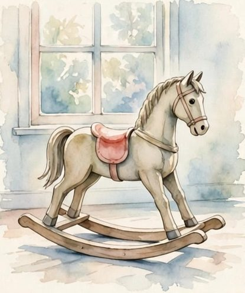
A wooden rocking horse by the window, its saddle faded coral, waiting out the afternoon light.
One whole fleet in the boathouse is devoted to a single forbidden harbor: the night, entire, from dusk to dawn, in the child's own company. To stay up all night was not a wish for tiredness. It was a wish for the world's other shift — the house after the lamps of authority went out, the kitchen at midnight, the stars doing their slow work unwitnessed. The child suspected, correctly, that a second country existed inside the first one and kept different hours, and that bedtime was a border crossing closed to small travelers.
The wish was granted eventually, as such wishes usually are, in the least festive currencies: the night drive, the sick child's bedside, the deadline, the hospital corridor, the long flight east. The register notes this without bitterness, because something unexpected survived the granting. The grown keeper of a night watch still knows what the child knew — that three in the morning has its own clarity, that bread eaten at that hour tastes of voyage, that the world is kindlier and stranger than its daytime officials admit. The night turned out to be a real country. It simply issues its visas to the tired.
Still, the boathouse defends the original wish in its original size. The child did not want the night as duty or emergency; the child wanted it as festival, with snacks, with a blanket fort for a harbor, with dawn as the prize at the end of the expedition. That version is still available, rarely and deliberately, and the keeper recommends it in writing: one night a year, chosen, provisioned, and kept awake on purpose. Some boats on these shelves do not ask to be outgrown. They ask to be boarded once in a while, by a captain who finally holds the keys.
44To Be Grown Up
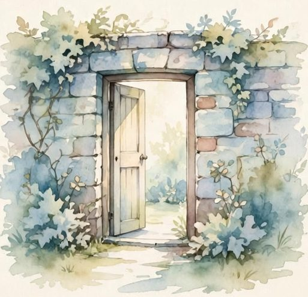
A small door set into the garden wall, standing ajar, with bright light waiting beyond it.
The largest boat on the middle shelf is also the plainest: to be grown up. It was launched by nearly every child who ever folded paper, and its cargo was itemized with great precision — to stay up, to eat what one liked, to go out without asking, to be the one who decides. Grown-up was a country the child could see from the far bank, lights on in every window. The boathouse keeps the boat without irony. Of all the dreams in the fleet, this is the only one that arrived exactly as ordered, and on schedule.
What the cargo list did not mention, the register adds in a smaller hand. The country of grown-up has weather the child never charted: bills arriving like tides, decisions with no adult above them to appeal to, the discovery that being the one who decides includes deciding wrong. None of this makes the old wish foolish. The child wanted the helm, and the helm is real, and much of it is genuinely fine — the late lamp, the unapproved dessert, the door that opens at one's own hand. The wish was accurate about the freedoms. It was only silent about their price, as wishes are permitted to be.
There is a courtesy the keeper practices at this shelf, and recommends. Now and then, the grown captain is invited to spend one freedom exactly as the child intended — the ice cream before dinner, the drive taken for no reason, the afternoon declared a holiday by sole authority. Not as a reward and not as an apology, simply as tribute, paid across the years to the small admiral who ordered this life from the far bank. The boat, the register says, delivered its passenger to the very country on its chart. The least the passenger can do is enjoy the harbor now and then.
45To Have a Secret Fort
Every survey of childhood finds the same unmarked harbor: the fort. Behind the hedge, under the stairs, between the shed and the fence — a place roofed with branches or blankets, known to a crew of one or two, defended by the strict law that its location was the treasure. The wish for a secret fort was launched by children who otherwise owned very little that was exclusively theirs. A fort was a first country: small, hidden, and governed entirely by its founder, with admission by password and refreshments by whatever the kitchen could spare unnoticed.
The fort is gone, as forts are; hedges get trimmed and sheds get cleared. But the keeper's register traces its outline in grown harbors with some amusement. The shed at the allotment. The corner of the workshop nobody else arranges. The parked car where a person sits for ten private minutes before going in. The wish did not die with the branches. It asked, from the beginning, for one small territory where the world's rules were suspended by treaty — and most grown lives, however respectable, quietly keep such a treaty port somewhere on their map.
The boathouse honors this boat for its seamanship. Of all the dreams in the fleet, the fort may have been the most seaworthy, because it required almost nothing the child did not already have: a boundary, a hiding place, an hour. It taught statecraft in miniature — who may enter, what may be stored, when to abandon a position and fold it into the hedge before supper. The keeper closes the entry with the observation the shelf deserves: a person who once kept a fort understands every later privacy, every closed door, every need for one room of one's own, from the inside.
The Boathouse Desk
One desk receives all correspondence for this house — questions, corrections, and word of any boat on the shelves: a dream remembered whole, a profession once sworn to, an impossible one fondly kept, and how the fleet looks from the far bank. It is read in the order it arrives.
46To Shrink, to Grow
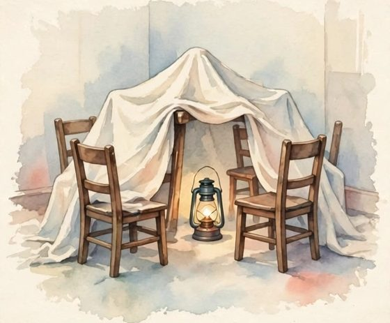
A blanket fort of chairs and a sheet in a quiet room, lamplight glowing softly from inside.
Two wishes share one hull on this shelf, entered as a pair because they were always launched together: to shrink, and to grow. To shrink to the size of a thumb and ride a leaf down the gutter stream, live in a doll's house with working doors, walk the garden as a jungle. To grow suddenly enormous, taller than the roof, able to see over the town and settle arguments by arriving. The child kept both charts folded in the same pocket, and switched between them according to the weather of the day and the size of the difficulty.
The keeper reads this pair as the soundest navigation in the whole hall of impossible things. Smallness and greatness were never really about inches. To shrink was to wish the world detailed and near, its small countries explorable, its dangers scaled down to grass height. To grow was to wish for reach — to be finally the size of one's intentions, too large to be sent from the room. Every grown life still sails these two headings in turn: the wish to be less visible on a hard day, and the wish to be larger than the trouble by Friday.
Neither wish came true in the flesh, and the register declines to record that as a loss. The magnifying glass and the high shelf taught the pair of them their real trade, which was proportion: the sense that a problem's size is partly a matter of where the captain stands. The boats rest side by side, hulls touching, under one label in the keeper's hand. It reads simply: weather instruments. A child who rehearsed being tiny and being huge was practicing, without knowing it, the oldest skill on the river — to change size in the mind before deciding what the water asks.
47To Breathe Underwater
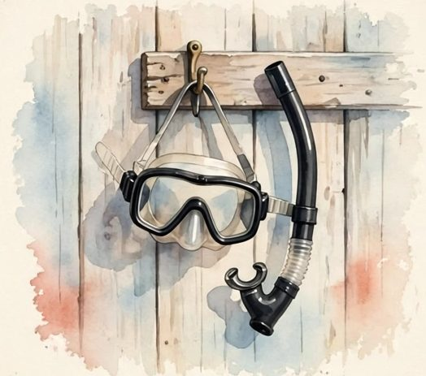
A diver's mask and snorkel hanging on a hook against the boathouse wall, ready for deep water.
The last of the impossible fleet is the wish to breathe underwater, and the keeper logs it with particular respect, because it was never a wish to escape the world. It was a wish to stay. The surface was loud and required; the water offered another element entirely — slow light, green quiet, the company of fish going about their business without questions. The child at the riverbank or the pool's edge was not fleeing anything. The child was applying, in the only way available, for citizenship in the larger half of the world.
Snorkels were bought, eventually, and diving lessons exist, and the register acknowledges the grown world's partial answers with courtesy. But the child wanted no apparatus. The wish was for the border itself to dissolve — to pass between air and water the way weather passes, without equipment, without the clock of held breath running in the ear. That wish stays on the shelf ungranted, in the good company of flight and invisibility, and the keeper insists it earned its place. It taught wanting at full stretch: a desire aimed not at owning something, but at belonging somewhere.
There is a footnote, added years later in the same hand. Grown lives do learn a slower version of the art: the long swim where the breath settles into rhythm, the hour underwater of deep work when the surface noise stops reaching down. Fishermen, divers, swimmers of rivers — the river keeps its citizens variously. The keeper closes the hall of impossible things here, at the waterline, with the fleet complete around the walls. None of these boats sank. They ride their shelves the way stars ride the chart: not reachable, and not, for a moment, to be apologized for.
48The Impossible Ages Well
The hall of impossible things closes with a finding the keeper has verified across a lifetime of registers: the impossible dreams age the best of the whole fleet. The practical wishes dated — the professions renamed themselves, the treasures turned out to be other people's. But flight is still flight, and talking with animals is still the finest diplomatic posting ever imagined, and no decade has managed to make them look foolish. Absurdity, it turns out, is a preservative. A wish that never had to meet the world's terms was never forced to renegotiate them, and it keeps its launch-day color perfectly.
There is a reason, and the register states it plainly. The impossible ones were never really cargo; they were sails. They existed to catch the wind of wanting itself, to teach a small captain that desire could be aimed at the horizon without permission from the chart. A child who spent a summer trying to fly learned lift, balance, and the exact weight of disappointment that can be carried without capsizing — lessons the possible dreams, with their timetables and examinations, taught in duller ink. The impossible fleet did the fleet's most important work, and it did the work earliest.
So the keeper oils no hinges in this hall and apologizes for nothing on its shelves. When visitors ask whether these boats embarrass the house, the answer is a shake of the head and a hand on the oldest hull. The possible dreams made lives; the impossible ones made the wanting that made the lives. Let the hall stand as the fleet's figurehead, facing the river, paper wings and all. What a child dared to want without evidence remains, in the keeper's judgment, the most seaworthy evidence of all about who that child was going to become.
49Not Dropped, Set Down
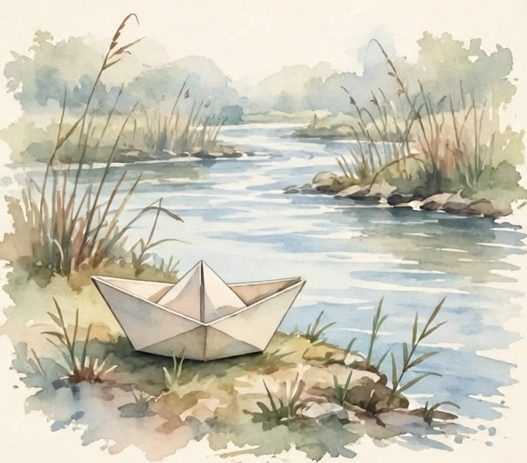
A paper boat set down on the riverbank, the water flowing on past it toward the bend.
The boathouse keeps a careful vocabulary, and this hall begins with its most important distinction. The dreams on these shelves were not, for the most part, dropped. Dropped implies a fumble, a shock, a thing lost mid-carry with a splash. The record shows something quieter. They were set down — the way a traveler sets down a parcel at a bend in the path, meaning to return in a moment, the way a boat is eased onto the bank rather than wrecked on it. Hands opened. Attention turned. The river of the days flowed on, and the moment stretched into years.
Set down where, the visitor asks, and the keeper walks the shelf. Here, at the start of a school term, when the days acquired bells. Here, beside a new brother's cradle, when the house rearranged its harbors. Here, on the afternoon a better and nearer wish arrived and there were only two hands. Almost none of the settings-down had witnesses, and none had ceremonies. That is precisely the house's point. Forgetting, in the main, is not an event. It is the accumulation of mornings on which the dream was not picked up again, each morning innocent, the sum of them decisive.
The distinction matters because it changes the weather of the whole hall. A dropped thing invites blame — of the hands, of the path, of the years. A set-down thing invites only recognition. Nothing here was fumbled by a careless child or stolen by an unkind world; it was rested, the way tools are rested between seasons, the way a boat is hauled out for a winter that turns out, quietly, to be long. The keeper asks visitors to use the house's word when they speak of their own shelves. Set down. It is the truth, and it is gentler, and the two agree more often than people expect.
50The School Bell Curriculum
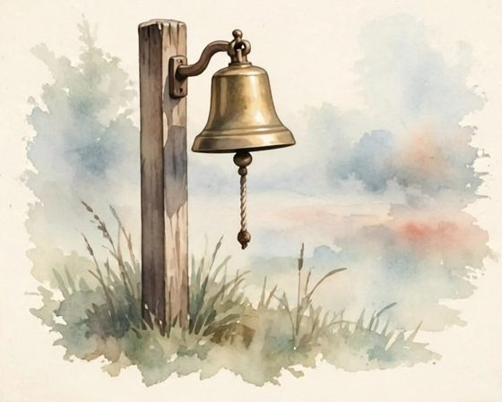
A school bell of brass on a wooden post, standing in the morning mist above the lane.
Then came the years with bells in them. The boathouse does not indict the school — the keeper is careful on this point, having learned to read and reckon inside one — but the register records what the timetable did to the fleet. The day acquired edges. Hours were named for other cargo: letters, numbers, the names of rivers one would never sail. A dream that had once held whole afternoons now had to keep to the margins, the walk home, the last light before supper. Many boats did not sink under this arrangement. They simply rode lower, season by season, in water that had less room for them.
There was also a curriculum nobody printed, and the hall names it without heat. Alongside the lessons ran the slow education in what counted as a sensible answer — which futures the room approved, which wishes raised the particular laugh that teaches faster than any rule. Most children are quick students of weather. A dream mentioned once to that laugh was rarely mentioned again, and a dream unmentioned sails out of conversation into storage, where storage, given enough terms, becomes the quiet this hall exists to describe. The bell did not forbid the boats. It simply never rang for them.
And yet the register keeps a counter-entry, because the house deals in whole truths. The same school years that beached the fleet also built half the boathouse. Reading opened charts the child could never have drawn alone; reckoning taught the measuring of real distances; a teacher here and there was a lighthouse keeper in disguise, tending small lights without knowing the harbor's name. Some dreams were not set down in those years but translated — the voyage into geography, the treasure into history, the animals into science. The bell rang for the translations. The originals rested, and the house keeps both entries side by side.
51A New Dream Moors Alongside
The commonest way a dream is forgotten, the keeper says, is not by storm or by order. It is by arrival. A new dream comes up the river with the season — brighter, nearer, better suited to the captain's new height — and moors alongside the old one at the same jetty, and for a while the two ride together, hulls knocking gently in the current. The old dream is not expelled. It is simply visited less. Then one autumn the keeper of the jetty looks along the moorings and notices that one boat has been riding untended for a long while, its paper soft with weather.
No blame attaches to the new arrival; the register is firm about this, because the new dream is usually innocent and often excellent. The horse gives way to the bicycle, the bicycle to the wider world beyond the lane, the stage to the workshop, the treasure map to the actual map. Each successor arrived honestly, asked honestly, and deserved its mooring. A childhood is not a single berth. It is a jetty that fills and empties with the years, and the filling is the sign of a harbor in use — the saddest jetties are the ones where nothing new ever tied up.
What the old dream makes of its successor, nobody can ask it; the house can only observe the etiquette of the shelf. The keeper notes that the two boats rarely quarrel in the record. More often the new dream is found, on inspection, to be carrying a folded corner of the old one — the voyage inside the geography, the fort inside the workshop, the wish to be seen inside the wish to be useful. Succession on this river is seldom a clean replacement. It is a handing-down with alterations, like a boat re-papered in a new color, sailing under a new name, on water its first captain would recognize at once.
52Told It Was Silly
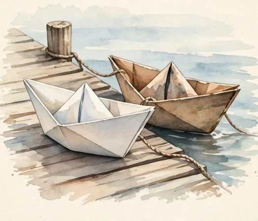
Two paper boats moored side by side at the jetty, one new and white, one weathered by seasons.
One shelf in this hall is shorter than the others, and the keeper keeps it without decoration. Some dreams were not set down gradually or outgrown in season. They were answered, once, with a single tired sentence — that is silly — and the sentence did the work of a winter in an afternoon. The house does not build a case around it. The sentence was rarely spoken in cruelty. It came from tired adults, from older children trying on importance, from the general weather of a world in a hurry. But the register records its tonnage honestly: small words, spoken once, can beach a boat for fifty years.
What followed the sentence was usually not argument but administration. The dream was not debated; it was filed, by its own captain, under things not to be mentioned — and a dream unmentioned, as this hall has noted, sails quietly out of the days. The child did not stop wanting, exactly. The child stopped launching in public, then stopped launching in private, then found the harbor strangely empty and could not have said when the water went out. The boathouse insists on the mildness of its account because the mildness is the fact: forgetting by embarrassment leaves no wreck to point at, only an absence with good manners.
The keeper's answer, such as the house permits itself, is a sentence of its own, entered opposite the first one in the register. It took a later voice, sometimes — a friend at forty, a book, a stranger's unembarrassed enthusiasm — but in the house's experience the beached boats from this shelf float again surprisingly fast once somebody says, in ordinary tones, that is not silly at all. Paper is patient. A wish can wait half a century in a dry hull for one fair sentence, and lose remarkably little of its color in the waiting. The shelf is short. The keeper hopes, in time, to need it shorter.
53Growing Out of the Water
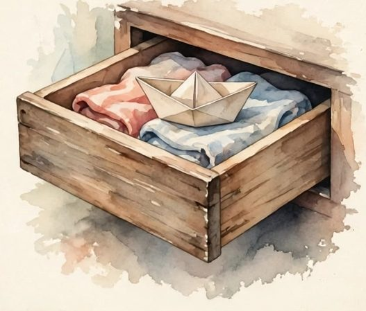
A drawer left half open, a paper boat resting inside among the folded cloth.
Some boats were not set down, traded, or beached. Their captains simply grew out of the water the boats were built for. The shallow bright river of early childhood — where every wish was an afternoon's sail from the bank — deepens and widens as the years run, and a small paper craft, perfectly made for the shallows, finds the new water too wide for its seams. Nothing failed. The river changed its gauge. The keeper enters these with particular tenderness, because there was never a moment of decision to point to, only a slow alteration of depth that nobody announced and nobody could have prevented.
It is the way of water that it does not apologize for deepening, and the way of captains that they are the last to notice. The boat is launched one spring out of habit, ridden with the old pleasure for an hour, and then — the phrase in every register is some version of it — it is not the same. The captain blames the boat, then the weather, then, with luck, understands: the sail was fine, the river outgrew it. Growing out of the water is not a verdict on the craft. It is a measurement of the captain, and the measurement, properly read, is good news delivered in a melancholy envelope.
The house's counsel for these boats is storage with honors, the good shelf, the dry hull. A craft outgrown is not a craft disgraced, and the keeper will not have it spoken of as a phase, that dismissive word, as if its seasons in the shallows were a rehearsal for real water. They were real water. The child who sailed them was really sailing, with real weather and real delight, on the only river there was. The deeper river does not make the shallows false. It makes them early — and early, in the register's hand, is written without a trace of apology.
54The Practical Years
In every register there comes a stretch of entries written in a different ink: shorter, plainer, all business. The practical years. The dream fleet does not feature in them because the days themselves changed cargo — examinations, first wages, the rent of small rooms, the arithmetic of being taken seriously. The keeper reads these pages without reproach. A harbor that never hosted practical years would be a toy harbor. The boats rested while their captain learned the unglamorous seamanship of ordinary life, and the house notes that much of that seamanship was learned, in the first place, for the sake of the fleet.
For that is the open secret of the practical years: most captains believed they were earning toward the boats. The wages were going to buy the horse, the ticket, the lighthouse years, in some later and larger edition. The plan was rarely spoken and never quite abandoned; it was simply outrun, season by season, by the practical itself, which has a way of renewing its own lease. First the dream waited for the examinations, then for the wages, then for the quieter year that was always scheduled for next year. The keeper knows this calendar by heart. It is printed nowhere and kept by nearly everyone.
The house declines to call the arrangement a swindle, because it was not one; it was a postponement that behaved like one, which is a different entry. The practical years delivered real cargo — competence, provision, a roof that did not leak — and some of their captains, late and surprised, did buy the ticket. What the register asks is only accuracy: that the postponement be named as postponement, not as the dream's own failure to be worthy. The boats on the shelf are patient with the practical. It is the calendar they object to — it kept being torn from the wrong wall.
55Nobody Announced the Forgetting
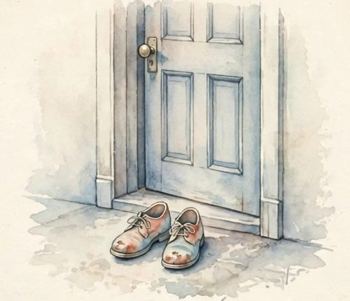
A pair of shoes outgrown, set neatly by the door, their laces tied for keeping.
Ask at the desk for the date on which a dream was forgotten, and the register cannot help. There is no such entry. No morning carries the note: today the lighthouse was given up; today the fleet stood down. The forgetting of a childhood dream is almost never an event with a date on it. It is a tide going out in a harbor where nobody was watching the waterline — discovered later, sometimes years later, by someone who comes down to the jetty on an unrelated errand and finds the boats resting high, dry, and strangely quiet, and understands that the water left long ago.
The absence of announcement is usually counted against the years, as if a proper ending owed its captain a ceremony. The keeper disagrees, gently, in the margin. Most true changes in a life arrive this way — not by trumpet but by accumulation, the way a shoreline changes, the way fluency in a language arrives, the way a friendship becomes old. A dream is not insulted by leaving quietly. Quiet was its element from the start; it lived in the unrecorded hours, the afternoons with no witnesses. It departs as it lived, and the house finds the symmetry fitting rather than sad.
There is a practical consequence, and the hall underlines it for visitors who arrive carrying reproach. If nobody announced the forgetting, then nobody can be charged with failing to prevent it — not the captain, who was busy living, and not the years, which were only flowing. What can be done is smaller and better: the discovery itself can be given the ceremony the departure never had. A name read aloud off a hull. An afternoon at the shelf. The register leaves a blank page after every fleet for exactly this purpose. Late honors, the keeper writes in the margin, are still honors.
56Kept in a Drawer of the Mind
The river widening as it leaves the valley, a small jetty falling behind in the mist.
Not every forgotten dream left the house. Some were put away indoors, in the drawer of the mind where a person keeps the almost-discarded: the good string, the key to a lock long changed, the letter that cannot be sent and cannot be burned. The keeper knows this drawer in every visitor, because everyone describes it the same way — rarely opened, never emptied, its contents known by touch. The dream rests there in the dark among the honorable clutter, neither sailed nor surrendered, and the drawer is not a failure of housekeeping. It is a decision the mind made without consulting the calendar.
Drawer-keeping has its own weather. The drawer is opened by accidents — a smell of river mud, a song with the old harbor in it, the sight of a child folded over paper with total concentration — and for a moment the dream is in the hand again, weightless and intact, its name perfectly legible. Then the errand of the day reasserts itself, the drawer slides shut on good runners, and nothing in the kitchen announces what just happened. The keeper does not call these moments hauntings. The house prefers the word visitation, or, on plain days, simply inventory.
The house's judgment on the drawer is lenient, and the register states it so that visitors stop confessing to it. A mind is not obliged to sail everything it keeps. Storage is a legitimate harbor service, and some dreams are better kept than spent — their whole value in the keeping, like the good string, which is never used and never wasted. What the keeper advises against is only the locked drawer, the one its owner pretends not to own. An unlocked drawer, visited now and then with dry hands and a moment's honesty, is simply the boathouse continued by other means.
57Some Were Outgrown Like Shoes
The keeper keeps, by the boathouse door, a row of outgrown shoes, and directs visitors to it whenever this subject comes up. Some dreams were outgrown exactly like shoes: not rejected, not renounced, simply one season too small. The foot grew in the ordinary course of business. The shoe that had carried its captain faithfully over the whole known world began to pinch, and pinching, persisted in, would have done real harm to the walking. There is no villain in this exhibit and no failure either. There is only the arithmetic of growth, which no affection can appeal against.
What the house objects to is the language usually applied afterward. The outgrown shoe gets called childish, as if its smallness were a defect of character; the outgrown dream gets filed under silly early things, as if it had not fitted perfectly in its season and carried its captain without a blister. The register corrects both entries with the same sentence: a thing can be true at one size and finished at another, and finished is not the same as false. The shoe was not pretending to fit. It fitted. Then the foot, doing exactly what feet are for, grew.
Outgrown shoes, the keeper notes, are rarely thrown out in anger. They are passed down, or kept a while in a cupboard for reasons nobody examines, or found years later by a grown foot's owner who stands a moment in the hallway holding a shoe the size of a hand. The house recommends the same customs for the dreams. Keep one, if one asks to be kept. Pass the story of it down. And let the smallness move you without recruiting you: the shoe is not asking to be worn again. It is asking to be remembered at its true size, which was, once, exactly yours.
58Some Were Traded, Fairly
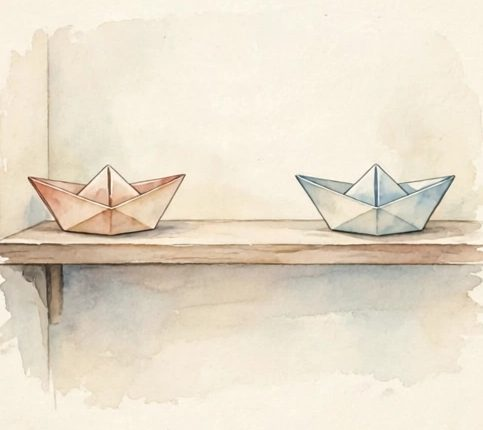
A shelf of resting paper boats with one space standing empty between them.
A fair number of entries in this hall close with a phrase visitors do not expect: traded, fairly. Not every dream that left the harbor was lost to it. Some were exchanged, in open water and with open eyes, for other cargo of real worth — the circumnavigation traded for the long love, the stage traded for the craft, the treasure traded for the ordinary miraculous security of a house that held. The keeper audits these trades without sentimentality and reports the finding plainly: in most of them, the captain got a fair price, and knew it at the time, and signed the ledger without a tremor.
A fair trade can still be misremembered, and the hall keeps watch on the wording. Years later, in low water, the traded dream is apt to be reclassified — called stolen, called sacrificed, called the price of a caution the captain never chose. The register resists the reclassification on the evidence. The price received is still there in the harbor, visible: the love still docked, the craft still worked, the house still standing. A trade is not made unfair by the sadness that sometimes visits its anniversaries. The keeper's rule is simple: judge the trade by both cargoes, on the whole voyage, not by one rainy evening's accounting.
None of this forbids a captain from trading back, in part, in a later season — buying a small share of the old cargo with new coin, at the new size. The river permits it; the house stamps such papers daily. What the hall forbids is only the slander of the original bargain. The dream that was traded fairly is owed the dignity of its ledger entry: it left the harbor honored, exchanged by a captain who was awake, for goods that were real. Let its shelf label say so. Traded, fairly. Of all the ways a dream can leave, it is among the most respectable departures on the river.
59The Quiet Ones Went First
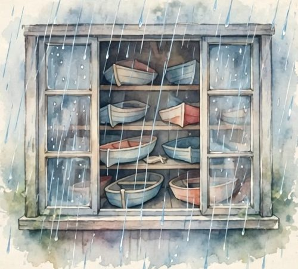
The boathouse window in rain, the fleet dim on its shelves inside, the river grey beyond.
The fleet was never one volume. It had its loud boats — the famous ones, announced at the table, repeated to visitors, launched with flags — and it had the quiet ones, which some children never told anyone at all. The register notes a law of this hall that surprises visitors until they check their own shelves: when the forgetting came, the quiet ones went first. Not because they were weaker. Because nobody else knew their names. A dream spoken aloud has witnesses, and witnesses are a kind of mooring; a dream kept entirely private is moored only to its captain's attention, and attention is a tide that goes out.
The quiet ones deserve a paragraph of their own, because they were often the truest cargo in the harbor. The loud dreams were frequently borrowed finery — the professions from the storybooks, the fame from the screen. But the quiet one, the one with no audience at all: to keep one particular person safe forever, to live in the hollow hill, to be the one the animals came to — that dream had no one to impress and nothing to prove, and it sailed its small water with entire sincerity. The house mourns no dream, by policy. For the quiet ones, the keeper allows the register a longer pause between entries.
There is one advantage the quiet ones hold, and the hall records it as their due. Having never been announced, they were never argued with. No sentence was ever spent on them; no laugh ever reached their moorings; the world's rough weather passed over a harbor it did not know existed. They left in silence, but they also lived in it, complete and unedited, for exactly as long as they lived. When one surfaces now — and they do, in the small hours, with their names miraculously intact — the keeper receives it like a message in a bottle from the fleet's most private admiral, and logs it without comment.
60Forgetting Is Also a Kindness
The hall of forgetting closes with the entry the keeper considers its most merciful, and the one visitors resist longest. Forgetting is also a kindness. The mind that set the dreams down was not only busy or distracted; it was, in its unrecorded wisdom, clearing the jetty for the life that was actually arriving. A captain who kept every boat ever folded in active service would have no water left to sail in. The harbor of a life has room for a fleet at rest and a few boats under way — not for every sail ever raised, all at once, forever.
The kindness has a second face, and the register turns it to the light. Forgetting spared the dreams the indignity of being audited. A dream remembered daily for fifty years would have to answer, daily, for its non-arrival; it would be cross-examined by every practical year, worn thin by explanation, perhaps finally resented. The stored dream answers nothing. It keeps its launch-day weather, its captain's whole heart, its colors unfaded by argument. The mind, in letting it rest, preserved it better than vigilance could have. More than one keeper at this desk has said it outright: the forgetting was the dream's safe-conduct through the years.
So the hall ends not with a rescue but with thanks, which the house considers the correct final entry for a survey of forgetting. Thanks to the mind that kept what it could carry and rested what it could not. Thanks to the years that made room, even by taking it. And thanks, across the water, to the small captains who folded the fleet in the first place, in earnest, in weather, without the least idea they were building an archive. The keeper closes the register, hangs the lantern, and leaves the fleet as it was found: at rest, unbetrayed, and — the house insists on the word — kindly forgotten.
The Boathouse Desk
One desk receives all correspondence for this house — questions, corrections, and word of any boat on the shelves: a dream remembered whole, a profession once sworn to, an impossible one fondly kept, and how the fleet looks from the far bank. It is read in the order it arrives.
61The Compass Still Swings
A brass compass open on a table, its needle swung toward a resting paper boat.
In the boathouse there is a brass compass that no one has wound or wound down, and its needle still moves. Set it on the table beside the shelves and it does not point north first; it swings, hesitates, and settles toward the nearest resting boat, the way a needle in an old house swings toward the iron in the walls. The keeper does not call this an omen. He calls it an instrument doing the honest work of instruments: reporting a pull that is still there. Something in the grown life still answers to the direction the child once chose, and the needle has known it all along.
It shows in small decisions that never made it into any account of a life. The route chosen by a river rather than a road. The window seat, always, without thinking. The book opened at the maps before the first page. None of these is the dream itself; the dream was larger and had sails. But a compass does not need the whole voyage to prove its point. It only needs the needle to tremble when the old bearing crosses the new one, and it trembles often enough that the keeper keeps the brass polished, not as an exhibit, but as a working tool of the house.
Visitors sometimes ask whether the swinging means the dream should be taken down and launched again. The keeper shakes his head and puts the compass back in its case. A needle that swings is information, not instruction. It says the bearing exists; it does not say the boat must sail. What a person does with a bearing is their own weather to decide, on their own morning. The boathouse only keeps the instrument true, the needle free, the glass clear — so that if anyone ever wants to know which way the pull runs in them, the answer is ready, and has been ready for years.
62Skills Learned for a Dream
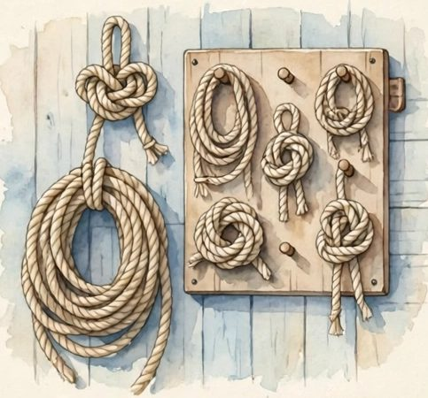
A coil of rope and a sailor's knot board on the boathouse wall, the knots still true.
Every dream, while it lasted, put its captain to school. The child who meant to sail around the world learned knots before long division, learned the names of winds, learned to read a sky the way other children read the clock. The voyage never happened, and the lessons stayed anyway, filed in the hands. Ask that grown person to tie anything: a parcel, a shoelace in a hurry, a boat to a jetty they happen to be standing on — and the fingers remember a curriculum that was never examined, never graded, and never once forgotten.
It is the same in every hall of the boathouse. The detective carries a lifetime habit of noticing which drawer is open. The would-be vet bandages a cut with a steadiness that surprises the room. The lighthouse child grew into the adult who checks the lamps of any house they sleep in, who is calm at three in the morning because somebody once had to be. These are not leftovers, the keeper insists. They are cargo. The dream carried them across the years the way a river carries silt — quietly, and to exactly the banks where they would be needed.
So the house keeps a knot board on the wall by the door, not as decoration but as a record. Each knot on it was tied by somebody's childhood ambition and has held, in adult life, things the child never imagined: furniture in a moving van, a tent in weather, a friendship, more than once, by the plain skill of knowing how things fasten and how they come undone. The keeper's ledger counts skills among the dream's true earnings. A boat may rest on a shelf forever. What its captain learned folding it never rests at all.
63Tastes That Stayed
The dreams went, but the tastes they trained stayed behind like furniture. The child who dreamed of the circus still cannot pass a striped awning without slowing down. The one who meant to live in a treehouse buys the flat with the balcony, chooses the top bunk on the night train, orders the corner table by the window without knowing why. The keeper keeps a list of these survivals in the back of the register, not to prove anything, but because they are the fleet's most faithful logs: appetite keeps better records than memory does.
There is no sadness in the list, and the keeper will correct any visitor who reads it that way. A taste is a dream that learned to live at table scale. It does not need the whole sea; it is content with salt on the food, a view of water from the train, stories of voyages read in an armchair with the lamp low. Small, daily, and entirely kept — if the grand ambitions of childhood had to be translated into something an ordinary week can hold, they could hardly have chosen a more durable form than pleasure.
Sometimes a taste outvotes a whole biography. A person may spend twenty years in offices their younger self would have fled, and still the ordering of a life shows at the edges: the sea shanty hummed while washing up, the maps on the wall of a landlocked room, the holidays that bend, year after year, toward harbors. The boathouse reads these bends the way sailors read a current — not as failure to hold a course, but as the water's own signature on the voyage. What a child loved first, the adult still loves, in whatever portion the week allows.
64The Grown-Up in the Dream's Clothing
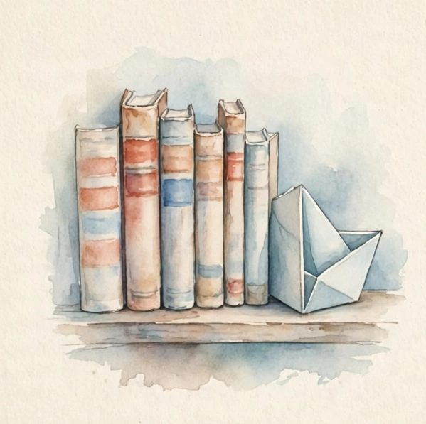
A shelf of much-loved adventure books with faded spines, a small paper boat standing as a bookend.
Now and then the keeper walks a visitor along the shelves and stops at a boat whose name makes the visitor go quiet. Read it closely, the keeper says. Not the name — the life. The child who folded this one dreamed of libraries on ships, of reading every book ever written about the sea. The adult became an accountant in a town without a harbor, and believes the dream came to nothing. Then the keeper asks about the flat: three walls of books, a reading chair by the window, the sea in a hundred volumes if not outside the door.
This is the quietest trick the fleet plays: the dream survives by dressing the grown-up in its clothing, one garment at a time, until the whole wardrobe matches and nobody remembers the fitting. The explorer wears it as a job that sends her to new cities. The detective wears it as the friend everyone calls when something is lost. The costume is never announced. It is simply what the life looks like from inside — ordinary, chosen for comfort, entirely theirs — until some afternoon in the boathouse the pattern is pointed out, and the seams show.
The keeper is careful with the pointing out. It is offered as a kindness, never as an ambush, and it is never used to argue that the visitor should feel otherwise about the years between. A person standing in the dream's clothing has not been cheated of an ending; they have been living one, at walking pace, in weather the child never pictured. The boat on the shelf is not the truer version of that life. It is the pattern it was cut from — and patterns, as any tailor will say, are kept precisely because the garment is out being worn.
65Fulfilled Sideways
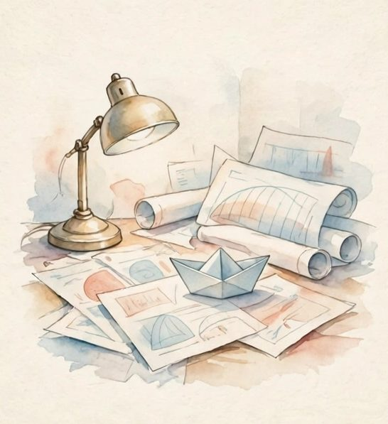
A grown-up desk with a lamp and charts, a small paper boat keeping company among the papers.
Some boats in this hall carry a second name, written underneath the first in the keeper's pencil: answered, by another road. The child dreamed of the lighthouse, its tower, its turning light, its stairs like a shell. The adult tends a night desk in a hospital corridor, walks rounds in the small hours, keeps the log, watches over sleepers, and goes home at dawn through empty streets. No tower. No sea. And yet the shape of the wish — to be the one awake, the one who keeps the light — is kept so exactly that the keeper files the boat under fulfilled.
Sideways is the direction of most arrivals, the keeper says, and only pride insists on straight lines. The would-be sailor runs a bookshop of sea stories and knows every captain by name. The runaway to the circus juggles deadlines, three at a time, in an office with juggling clubs in the drawer for the hard afternoons. The treasure hunter reads old maps for a land registry and still feels the floor tilt, pleasantly, whenever an unknown parcel surfaces. None of them reached the address on the sail. All of them live in the country the sail was pointed at.
The house rule for this hall is strict: a sideways fulfillment is entered in the ledger at full value, with no asterisk and no smaller type. To grade it as a consolation is to misunderstand what was ordered in the first place. The child did not order the lighthouse; the child ordered the feeling of the lighthouse, its height and light and necessary solitude, and feelings can be delivered by many carriers. When the delivery comes by another road, the keeper signs for it without argument, and the boat rests as easy as any that sailed the direct course.
66The Friend Who Lived It
Every fleet has one boat that actually sailed. Somewhere there is a friend — the desk-mate, the cousin, the boy from the third floor — who kept the same dream past the years when everyone else set theirs down, and went, and did it, and sends photographs from the far side of the water. The boathouse keeps a shelf for these stories too, because meeting that friend again, at a wedding or a school reunion or across a café table, is one of the standard weathers of a grown life, and the house believes in preparing for weather.
The preparation is simple, and the keeper states it without decoration: their sailing is theirs. It was never a race, because there was only ever one boat with your name on it, and it is on this shelf, not on their water. The friend's voyage proves the sea exists; it does not prove a thing about yours. Where envy keeps books — so much wind for them, so little for me — the keeper keeps none. The ledger of this house has no column for another person's weather, and the page stays clean because it was never ruled.
What the friend brings back, if the meeting is kept clear, is better than a verdict: it is news. News of whether the water was as imagined, whether the lighthouse stairs were worth the climbing, whether fame tasted of anything at all. Heard rightly, it settles questions that speculation never could, and often the answer is a kindness in disguise — the dream was real, and its reality belongs to the one who carried it, and carrying it was the whole of the work. The keeper pours the tea. The photographs go around the table. The river outside goes on being everyone's.
67A Sentence You Still Say
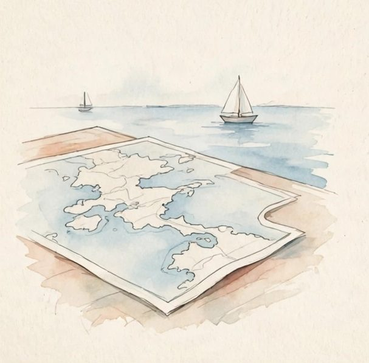
A map table with routes penciled along the coastlines, a white sail far off on the water.
Ask at the desk for the smallest exhibit in the house and the keeper will not reach for a shelf at all. He will ask what you say, under your breath, when a plan is announced, when a door opens, when the weather turns. Somewhere in every grown vocabulary there is a sentence that was first spoken by the child with the dream — a whole philosophy in nine words, carried across forty years without a single revision. When I am captain, we go anyway. The keeper has heard a hundred variants. He writes none of them down. They are not his to keep; they are still in service.
The sentence survives because it was never really about the voyage. It is about how a person meets a morning. One keeper of a sentence says it before difficult meetings, in the car, straightening a tie that the child would have refused to wear. Another says hers at the stove, tasting soup, adjusting for a table of skeptics. The words keep their original cargo — nerve, appetite, a refusal to be becalmed — long after the ship they were coined for has been taken down from the shelf and admired like an artifact. Sayings are the fleet's sturdiest hulls. They do not leak.
Children coin these sentences without knowing they are minting currency for a lifetime. That is why the boathouse treats overheard childhood certainties with respect, and why the keeper, when a young captain announces one at the jetty, listens the way one listens to weather coming. The sentence will outlast the boat, the harbor, quite possibly the river's own name on the maps. It will be said in kitchens and cars and hospital corridors by a person who no longer remembers folding anything. And each time it is said, the fleet stirs on its shelves, very slightly, like boats answering a tide in another room.
68Places You Still Choose
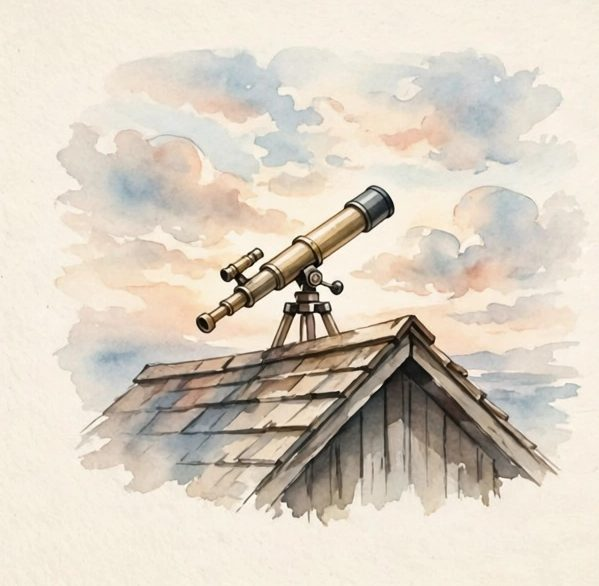
A telescope on the boathouse roof, pointed at dawn clouds over the river.
The fleet keeps sailing in one place nobody thinks to look: in the addresses a person chooses. The lighthouse child rents the flat at the top of the house, every time, in every city. The treehouse captain's garden has a shed raised on posts, a ladder, a roof of branches. The runaway's route to work crosses the river twice, and though a shorter road exists and has been pointed out by helpful colleagues for years, the long way over the water is defended with a shrug and never surrendered. The keeper calls these the honest maps.
A chosen place is a dream with its feet on the ground. It asks nothing grand — a window facing the water, a desk under the eaves, the café table from which the harbor can be watched while the letters get written. But the keeper has learned to read these small fidelities as the truest surviving documents in the house, truer than any diary. A diary records what a person meant. An address records what they did about it, daily, with rent and shoe leather. The fleet rests on shelves. The choosing goes on at street level, uninterrupted.
Visitors are sometimes embarrassed by these discoveries, as if a taste for high windows were a confession. The keeper finds the embarrassment misplaced and says so, kindly, over the register. To still choose the places the dream would have chosen is not to be stuck in childhood; it is to have carried one true preference intact through every rearrangement of a life. Houses change hands, harbors silt, careers wander inland and back. The window seat, the river crossing, the top floor — these are the compass needle made architectural, and there is no shame in a needle that still works.
69The Child's Map in the Adult's Drawer
Somewhere in the adult's house there is a drawer that functions as a harbor of last resort. It holds the usual ballast of a life — string, batteries, keys to locks that no longer exist — and underneath, flattened by the years, a map drawn in childhood: coastlines in crayon, an island shaped like a sleeping animal, the route out marked with a confidence no cartographer has matched since. The adult has moved house four times. The map has moved with them every time, and at no point in any packing was its disposal so much as discussed.
The keeper understands the drawer perfectly; the boathouse is only a drawer built at house scale. What is kept without a plan for using it is not clutter, whatever the tidy say. It is ballast. A life sails steadier for having its first map aboard, even folded, even inaccurate — perhaps especially inaccurate, since the island was never the point. The point was that once, at a kitchen table, the world was drawn to a child's specification and found entirely navigable. Every later map, printed and correct, is measured against that one's nerve, and found a little cautious.
On the rare afternoons when the drawer is opened for string or batteries, the map gets its moment: smoothed on the table, studied without hurry, folded back along its original creases by hands that remember the route. Nothing is decided. Nothing needs to be. The keeper maintains that this small ceremony, repeated across decades, is one of the forms a kept dream takes when it asks for nothing — no launch, no apology, no revival — only to remain aboard, under the string and the spare keys, in the drawer that every house has and no house admits to.
70What the Dream Was Really Asking
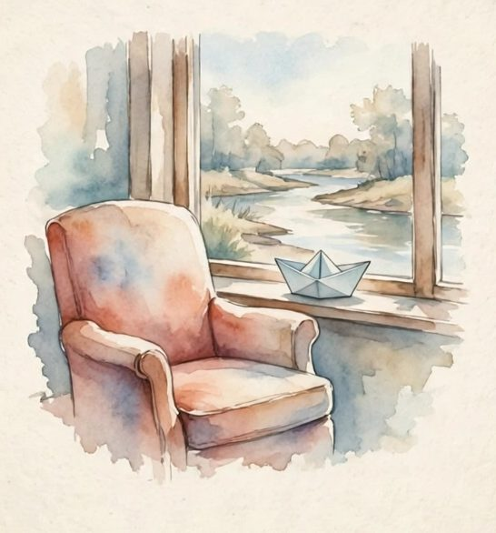
An armchair by a river window, a small paper boat resting on the sill.
Late in this hall the keeper asks the question the whole boathouse has been circling, and he asks it of one boat at a time. The astronaut's boat is taken down first. Was it the rocket that was wanted — the tin, the fire, the countdown? Or was it the height: to be so far up that the whole turning world lay out like a map on a table, and everything small down there, including every trouble, reduced to its true size. The keeper sets the boat back gently. Most captains, given the images side by side, point at the second one.
Boat after boat, the same sorting happens, and it is always the cargo that outlasts the hull. The runaway wanted the open gate and the road deciding itself. The famous one wanted the room to turn when the door opened — to arrive, and be gladly seen. The invisible one, for one day only, wanted the opposite shore of the same river: to walk through the market unseen and hear the world unguarded. The sailor wanted the horizon to keep its promise of more. Altitude, freedom, being seen, being unseen, more — the keeper chalks the cargo on the boathouse wall, and the list is short enough to memorize.
This is not an exercise in seeing through the dreams, the keeper insists, taking care with his words. The boat was wanted too, honestly and entirely; children do not deal in symbols, they deal in boats. It is only that the years have a way of delivering the cargo by other carriers — the high window delivers the altitude, the unowned afternoon delivers the freedom, the friend's face at the door delivers the being seen. When a visitor objects that this is a smaller thing than the rocket, the keeper points at the river. The river delivers whole seas, he says, in buckets, in rain, in cups.
71It Was Never About the Boat
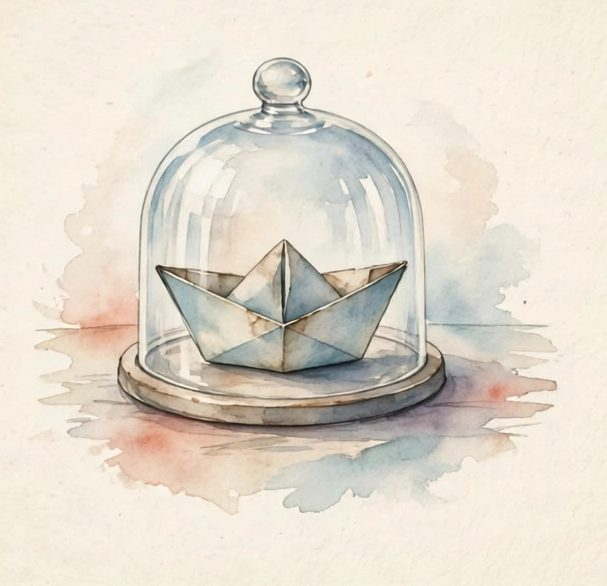
A weathered paper boat resting under glass on a table, kept dry and in good light.
The keeper keeps one boat under glass, and visitors always ask about it, because glass suggests a treasure. It is the plainest boat in the house: one fold, no name, paper gone the color of weak tea. It is under glass, the keeper explains, as a reminder to the whole establishment — to himself on busy days, to visitors in a hurry to make the fleet mean one thing. The glass is not for the boat's protection. Paper this old is beyond protecting. The glass is there to slow the looking down, the way a frame slows a picture.
Because of course it was never about the boat. It was about the afternoon the boat was folded — the kitchen table cleared, the page chosen with care, the whole shining seriousness of a person with a plan and a river in mind. It was about being the sort of creature who launches things. That creature did not retire when the launching stopped. It stands, on inspection, behind most of what the adult is proudest of: the letter sent, the company started, the table extended for one more chair. The hulls rest. The launcher is still on the roster, and still on duty.
So the plainest boat rates the glass, the good light, the bench in front of it. New arrivals sometimes laugh at the honor paid to so ordinary an object, and the keeper lets them; laughter at this shelf is a known stage of the visit. By the time they have walked the hall — the compass, the knots, the sentences, the chosen windows — they come back quieter, and look at the nameless boat the way one looks at a first photograph of a house one has lived in for years. The boat was the envelope. The letter was the wanting. The letter is still being delivered.
72The Fleet in the Bloodstream
The hall of what remains closes with the keeper's favorite heresy, delivered from the jetty with his sleeves rolled. The fleet, he says, is not on the shelves. The shelves hold the paperwork. The fleet itself went into the bloodstream years ago, the way river water goes into a valley — not stored anywhere you can point to, and present in everything that grows there. What a person wants at six does not retire at forty. It circulates. It colors the temper, the humor, the choice of friends, the instinct for which door in a corridor of doors to open first.
This is why two adults with identical biographies — same town, same school, same trade — can feel like different countries from inside. One carried a lighthouse into the bloodstream and runs on watchfulness and lamplight. The other carried the open road and runs on departure. Nothing in the record explains the difference; everything in the weather does. The keeper reads people the way he reads the river, by what is dissolved in them. And he is cheerful about the reading, because what is dissolved cannot be confiscated, lost in a move, or set down by accident. It travels with the circulation.
So the boathouse, for all its shelves and registers, is finally a modest institution, and the keeper is the first to say so. It keeps the names and the hulls — the evidence — while the true archive flows on through a thousand ordinary days, unphotographed. A visitor who leaves the hall understanding this has the whole doctrine in a pocket: the dreams were not lost, and they were not kept, either. They were absorbed, the way rain is absorbed by a garden — and whatever in a life still reaches, still launches, still leans toward the water, reaches with their strength in it.
73Found in a Moving Box
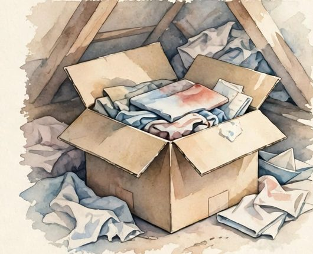
A moving box open in an attic, a paper boat resting on top of the folded things.
It happens in the middle of an ordinary labor: a house being packed, a parent's attic being cleared, a box opened that was sealed in another decade and labeled, in handwriting nobody claims, with a single hopeful word. On top of the folded curtains and the obsolete cables it sits, in state, like a small admiral surveying a linen sea: one paper boat, folded from a school notebook page, its name still legible along the hull. The person holding the box stops working. The whole room goes slightly quiet, the way rooms do.
The boathouse receives a dozen such boats a year, carried in with both hands and a particular expression the keeper knows well — half apology, half something else. Nobody ever throws the found boat away at the moment of finding. It rides home on the dashboard. It spends a week on the kitchen counter, presiding over the fruit bowl, while its finder walks around it conducting an argument they do not report. Then it comes here, or it goes to a shelf at home, or — the rarest outcome — it goes, one still Sunday, down to actual water.
The keeper's doctrine for this moment is printed on no card, because it needs to be said at walking pace: finding is weather, not a verdict. The box did not open itself to accuse anyone. The boat survived in the dark, among curtains, without light or ceremony, and asks for nothing at the moment of discovery except to be held up to the window and looked at. What the finder feels — the laugh, the pang, the long pause with the kettle in hand — is the weather passing over the river. Weather passes. The boat remains, patient as paper.
74A Child Asks You
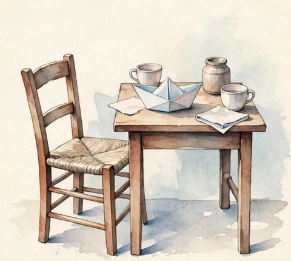
A small chair at a table set for questions, a paper boat standing as a centerpiece.
The other standard weather of rediscovery arrives at knee height, holding a drawing or a blunt pencil, and asks the question no adult asks anymore because adults have agreed among themselves not to. What did you want to be. It is asked at kitchen tables and on long drives, in the tone of a person inquiring about the weather in a country they fully intend to visit. The adult, caught between the sink and the honest answer, feels the floor of the years shift slightly — because the question has a return address. The asker is standing exactly where the answer was first given.
The keeper advises taking the question seriously, at the asker's own valuation, which is full price. Children do not ask it as an audit. They ask it as intelligence work for their own launching, gathering data on what becomes of captains. The honest answer — I wanted to sail around the world; I sell insurance in Ohio — sounds, to adult ears trained in irony, like a confession. To the asker it is simply a chart: here is one route the river takes, with its bends marked. They file it away, not as a warning, but as geography.
Sometimes the asking goes further, and the keeper has a shelf of secondhand reports: the child hears the answer, considers the adult before them with the fairness of a harbor master, and delivers the verdict of the young, which is no verdict at all. You could still go on a boat. The sentence lands the way weather lands — without malice, without a program. It does not demand the voyage. It simply notes that the river is still there, which at six is obvious and at forty-six arrives as news. The adult laughs. The laugh is real. So, underneath it, is the news.
75The Story Told at Dinner
Then there is the dinner-party rediscovery, the most social of the weathers. Somebody's brother-in-law, refilling glasses, tells the table what the host wanted to be at nine, and the story goes around with the bread — the rocket plans, the cardboard control panel, the launch indefinitely postponed by bedtime. The host laughs in all the right places. The table laughs. It is a good story; it has been told before and polished by the telling. Only later, washing up in the quiet kitchen, does the host notice that the story was told about them in the third person, like a previous tenant.
The keeper, who has heard the dinner version from a hundred visitors, holds that the story is not the enemy. A dream that can be told at dinner has been carried a long way and carried lightly; plenty of cargoes never make it out of the hold at all. The telling is its own kind of keeping — the fleet preserved in anecdote, sailing the inland sea of family memory, crewed by everyone who has ever heard it twice. If the teller laughs a half-second too long at their own part, that is weather too. It passes over the table like a squall over the harbor, and is gone.
What the boathouse asks of dinner guests is only accuracy of tone. Tell the story as a story of seriousness, not silliness — the nine-year-old at the control panel was not a joke then, and the joke now should be at the expense of the postponement, never of the pilot. Told that way, the story does its true work at the table: it reminds every captain present of their own cardboard panel, and sends them home past the river a little slower than they came. The keeper approves of anything that slows the drive home. The fleet has been advanced by slower drives before.
The Boathouse Desk
One desk receives all correspondence for this house — questions, corrections, and word of any boat on the shelves: a dream remembered whole, a profession once sworn to, an impossible one fondly kept, and how the fleet looks from the far bank. It is read in the order it arrives.
76The Sudden Weather of It
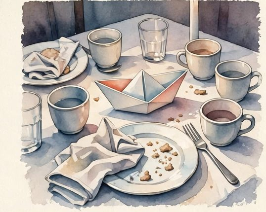
A dinner table after the meal, one paper boat among the cups, in evening light.
However it arrives — box, question, story — the meeting itself is weather, and weather has a speed. It does not creep. One moment the afternoon is ordinary, invoices and weather forecasts and the dog wanting out; the next, a forty-year-old wish is standing in the room like rain that has come in through a window nobody opened, and the heart is doing something unaccountable with its rhythm. The keeper refuses to be surprised by the suddenness. Rivers rise fast in spring. The inner weather obeys the same hydrology: a small thing melts far upstream, and the flood arrives all at once, downhill, now.
There is no procedure for the first minute of it, and the keeper distrusts anyone who offers one. The first minute is simply to be stood in, the way one stands in rain at a jetty — not fixing, not fleeing, getting wet at the rate the sky has chosen. Names can wait. Meanings can certainly wait; meaning is a dry-land activity, best conducted later, with tea. What the minute asks is only acknowledgment, the nod one sailor gives another across the water: seen, noted, still afloat. The keeper has watched a thousand of these minutes from the boathouse door. No one has been swept away yet.
Afterward the keeper does offer counsel, of the plainest kind, honed by watching what helps. Do not sign anything in the weather — no resignations, no reunions, no purchases of boats, actual or otherwise. Do not hold the inquiry at midnight; the river at midnight exaggerates its own depth. Write the name of the thing down, because paper is this house's whole technology, and paper holds what the heart in flood cannot. Then sleep. Weather, even the sudden kind, is famous for one mercy above all: by morning it has usually changed into something with a name, and names can be shelved.
77You Laugh First
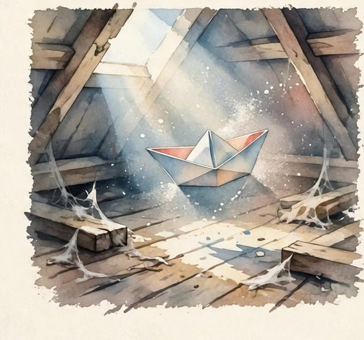
A paper boat caught in a shaft of attic light, dust drifting in the air.
The first sound the meeting makes, in the keeper's long experience, is almost never a sob. It is a laugh — startled out of the finder like a cork, at the box, at the question, at the sheer cheek of the thing turning up after forty years with its name still legible. The keeper trusts that laugh completely and defends it against all comers. It is not mockery. Nobody laughs that way at a stranger. It is recognition arriving faster than solemnity can, the body's own first draft of the news: this is mine, this was me, and look, it floats.
There are schools of feeling, the keeper knows, that treat the laugh as a door slammed against something sadder, and advise pushing past it quickly toward the solemn part. The boathouse is not one of those schools. Here the laugh is logged as the truest instrument reading of the meeting, because it is the one response the child would have understood. Children meet their own returning wonders laughing. The solemnity, where it belongs, comes later and at its own pace; hurried solemnity is merely weather dressed for church. The keeper pours tea and lets the laugh have the room as long as it wants it.
And the laugh does practical work, which this house respects above almost everything. It sets the meeting at the right scale. A thing you can laugh at — warmly, in daylight, holding it up to the window — cannot swell in the dark into an indictment or a tragedy; laughter is the harbor light by which sizes are judged truly. Visitors who laugh first, the keeper has noticed, go on to handle the boat with the steadiest hands: neither crushing it with significance nor hurrying it back into the box. The joke, it turns out, was the seamanship. The child always knew that.
78Then It Is Quiet
After the laugh, by a law as reliable as the tide tables, comes the quiet. It is not the same quiet as before the box was opened; that was the quiet of a room where nothing was happening. This one is inhabited. The boat sits on the table between the finder and the window, and the years sit down around it, unhurried, like relatives arriving one by one and taking their accustomed chairs. Nothing is said for a while, and the keeper, who has learned the choreography of this hall by heart, does not break it. He has put the kettle on well in advance.
The quiet is where the meeting does its real work, and the work is mostly sorting. In the quiet, the finder discovers which parts of the feeling are weather and which are cargo: the pang that fades by supper, and the steadier thing that is still there at breakfast. In the quiet, the dream stops being a symbol for everything and resumes being one particular boat, with one particular name, folded by one particular child in one particular kitchen. The keeper considers this reduction a mercy. Most grief about the fleet is fog — indefinite, everywhere. The quiet burns it down to a shoreline.
No one is required to emerge from the quiet with a decision, and the keeper strikes that expectation from the register wherever he finds it penciled in. The quiet is not a waiting room for the verdict; it is a room of its own, with a bench and a window, and some visitors stay in it, on and off, for a season — taking the boat down on rainy afternoons, putting it back without ceremony. That too is a completed form of meeting, the keeper says. A dream that can be sat with quietly has been met in full. The river does the rest, at river speed.
79What to Say to It
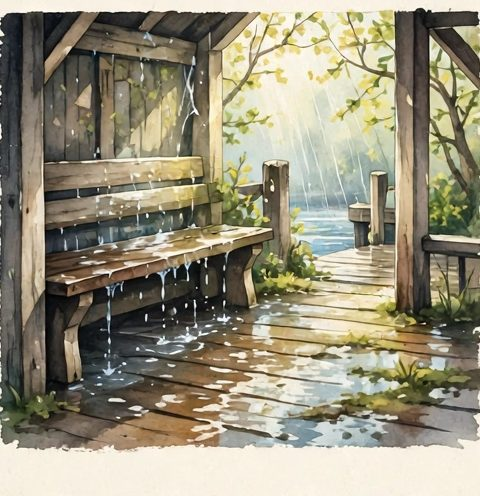
A boathouse bench in sudden spring sunshine after rain.
Sooner or later, in the quiet, the finder wants words. Not a speech — the keeper is emphatic on this point, having endured speeches read aloud at the shelves by visitors who had rehearsed them in the car — but a sentence or two, said plainly, the way one speaks to anyone who has traveled far to reach this room. The boathouse keeps a short liturgy for the purpose, gathered over years from the sentences that worked. It fits on one page of the register, and most of it is shorter than a boat's name.
The keeper's own sentence, offered first and without copyright, is this: there you are. Three words, and they carry the whole doctrine in a pocket. They do not congratulate the boat for surviving, or apologize for the shelf, or promise it water. They acknowledge arrival, which is what any traveler is owed before anything else is discussed. Other finders find their own forms: you were a good plan. I remember the afternoon. The river is still there, you know. The keeper writes none of them down. A sentence said to a boat is a private launching, and the house does not log private launchings.
What is never said here, the keeper notes, is just as instructive, and the register keeps a short list of phrases struck through. Too late is struck through first: paper keeps its own calendar and recognizes no such entry. You were silly is struck through in a heavier hand, as a falsehood about a serious captain. And anything beginning with the words I should have is set aside gently, not forbidden, but reclassified — that sentence is about the adult's whole life, and no single boat, however beloved, is built to carry a whole life. The boat is greeted. The life is the greeter's own affair.
80Not an Accusation
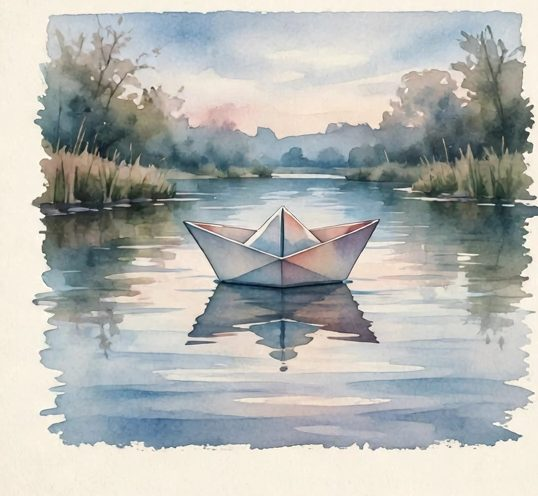
A paper boat and its reflection in still river water at dusk.
The hall of meeting closes with the sentence the keeper says most often at the door, to visitors carrying their found boats out into the evening like evidence in a trial only they are conducting. It is not an accusation. The boat did not come back to accuse. It has no lawyer, no ledger of the years, no interest in the verdicts of the court of what-if, which sits permanently, as far as the keeper can tell, in no harbor anywhere. It came back the way things come back in rivers: carried by a current, deposited by a season, entirely without intent.
The accusation, where it appears, is always home-made, and the keeper says so with the gentleness of long practice. It is assembled on the spot, from materials the years supply in bulk: the roads not taken, the cities not lived in, the other people's voyages reported at reunions. Held up to the window, though, the charge does not survive inspection. The boat's captain never filed it. The captain was nine, and held views on the matter that were simpler and kinder: the river was there, the boat was folded, the afternoon was good. No plaintiff. No case. Only a boat, and the weather of meeting it.
So the keeper's last act in this hall is a small ceremony of dismissal, performed at the jetty as the light goes. The found boat is set down between its finder and the water, and the court — if a court had gathered — is adjourned without a word of judgment in either direction. Not guilty, not innocent: those are words for another building. Here the finding is simpler and older. A child launched this in earnest. An adult found it in earnest. Between the two earnestnesses lies a whole life, and the life is not on trial. The river, unimpressed and kind, flows past both.
81The Dream Does Not Ask for Its Old Size
Visitors arrive at this room half braced, as if the old dream were waiting with its original plans unrolled, demanding to know why the voyage was never made at full scale. It is not. A dream met again after thirty years asks for surprisingly little, and the first thing the keeper points out is that it does not ask for its old size. The size belonged to the imagination that folded it, which was enormous in reach and modest in appetite. The dream itself has kept the proportions of its launching: a sheet of paper, a child's whole heart, and a river that seemed wide enough for anything.
The old size was never really a measurement. To sail around the world, at seven, meant the whole river and perhaps the sea beyond the bend; to keep a lighthouse meant a tower, a lamp, and no bedtime. The dream's geography was drawn to the scale of the world as it then stood, and the world has since been surveyed at adult scale, which is a different map entirely. The keeper does not hold the two maps side by side and call the smaller one a failure. The dream was true to its own chart. It still is. Nothing in the boathouse asks a boat to be bigger than the water it was folded for.
So a visitor may greet the dream at whatever size it now travels in, and that greeting is complete in itself. Some dreams, met again, turn out to have shrunk to the size of a taste, a habit, a fondness for harbors — and that is not a diminished thing, any more than a river is diminished by running narrower in summer. The dream does not stand on the shelf tapping its foot for the fleet it once commanded. It waits, patient as paper, for the only tribute it ever required: to be seen clearly, at its true size, and not mistaken for a reproach.
82It Can Be Small Now
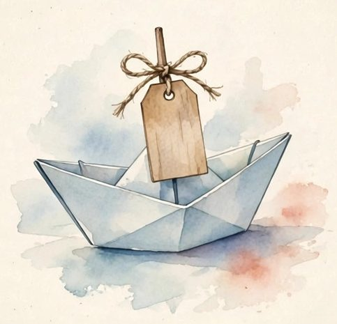
A small wooden tag, blank and label-less, tied with string to the mast of a resting paper boat.
The previous room established that the dream does not demand its old size. This one goes a step further and enters the house's permission in the register: it can be small now. The would-be sailor of oceans may take a ferry across the bay and call the crossing honestly by the dream's name. The lighthouse keeper may keep a lamp lit on a desk for whoever works late. The detective may solve the small mysteries of a household. None of these is the dream reduced to a joke. Each is the dream traveling at the size the present river allows, and the river, not the wish, sets the width.
Paper boats were always small. That is the point the keeper returns to whenever a visitor apologizes for the modesty of a revived dream. The original launch was a boat of folded paper on a stream, standing in for an ocean crossing, and nobody at the water's edge considered the substitution a cheat. Smallness was the dream's native medium from the first fold. A small version now is therefore not a compromise invented by tired adults; it is the same craft, in the same material, on water of the same kind. The imagination that once read a stream as a sea has not lost the skill. It has only lost the habit of using it.
Nobody at the Boathouse Desk issues sizes, and nobody inspects what a visitor takes away from this room. One visitor wants the small version and folds it that same evening. Another wants only to know that small would have been allowed, and leaves the boat resting, strangely lighter for the permission alone. Both visits are recorded identically in the register: dream met, size agreed between the parties, no arrears. The tag tied to the mast carries no measurements, and that is deliberate. In this house a dream is identified by its name, never by its tonnage, and a boat that fits the water it is actually on is, by the only standard the river recognizes, exactly the right size.
83Some Ask to Sail Again
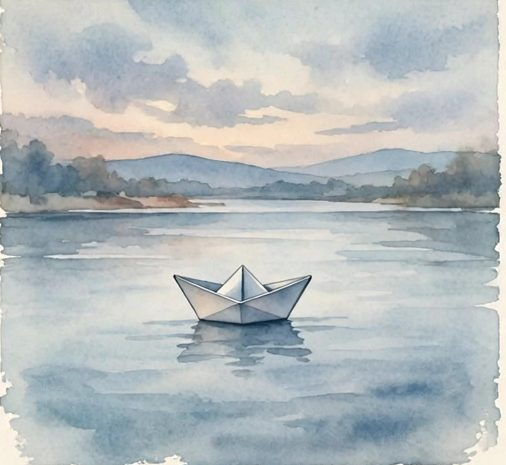
A single paper boat alone on a wide river, small against the evening light.
Most boats in the fleet, met again, ask only for a greeting. A few are different, and the keeper can tell them at a glance, the way a boatman knows a sound hull. They sit on the shelf with a kind of readiness about them: the fold still crisp in the memory, the name easy to say, the wanting underneath not embarrassed but awake. These are the dreams that ask to sail again. The house does not manufacture the asking, and it does not argue with it. It simply keeps a jetty in good repair for the occasions when a boat comes down from the shelf under its own power, so to speak, carried by a visitor whose hands have already decided.
The asking is recognized by practical signs rather than by weather. A dream met only in nostalgic light, at reunions and in old songs, may be a visitor's mood rather than the dream's request. A dream that asks to sail again shows up on ordinary Tuesdays. It survives being looked at plainly, in working clothes, with the calendar open. It fits some corner of the life as actually lived — an evening a week, a shelf of tools, a language taken up again at the kitchen table. The keeper's test is unglamorous: if the dream still seems worth its keep after the accounts of time and strength are honestly opened, then the asking is probably real.
Even then, the asking is an invitation and not an order, and this room insists on the distinction before the next one is entered. A visitor may hear a dream ask, may agree that it could sail, and may still set it back on the shelf — for a season, for a year, for good — without the house recording anything but a visit. Readiness is not a summons. Some boats are launched again from this room and some are only admired in their readiness, and the register gives both entries the same ink. What the boathouse will not do is talk a resting dream into the water, or a willing one out of it. The asking belongs to the boat. The answer belongs to the visitor.
84Some Ask Only to Be Named
The hall of meetings closes with the largest company in the fleet: the dreams that ask for exactly one thing, which is to be named. Not revived, not mourned, not explained to the table — named, once, accurately, in the words they were launched with. The keeper estimates that most boats on most shelves want nothing beyond this. Naming is a small ceremony and a complete one. A dream that has been named has been met; it takes its place in the record of the life as an entry rather than a rumor, and entries, unlike rumors, do not follow a person around the house making quiet noises at inconvenient hours.
Why naming suffices takes a moment's thought, and the room gives it. A boat in this house was named at its launching, in earnest, by a child who meant every syllable. The name is the dream's whole claim on the record: I was folded, I was wanted, I was put on the water. When a visitor stands at the shelf and says the name — to sail around the world, to keep a lighthouse, to talk with animals — the claim is acknowledged in full, in the original wording, without amendment or apology. Nothing is added and nothing is owed beyond the acknowledgment. The circuit that was left open by forgetting is closed by a single accurate sentence, and the keeper has watched it happen at these shelves for years.
After the naming, nothing further is required, and the room wants that plainly understood before the visitor moves on to the sterner halls. The box may be closed, the attic left, the ordinary evening resumed. What changes is small and durable: the dream is on the record now, under its true name, in the keeping of a house that does not lose its entries. Some visitors name a boat and weep a little, some name one and laugh, most do neither and simply stand a moment in the quiet that follows a thing said correctly. The keeper logs the name and the date. The shelf is straightened. The fleet rests. This hall's work, for most of the boats in it, is done.
85Retired with Honors
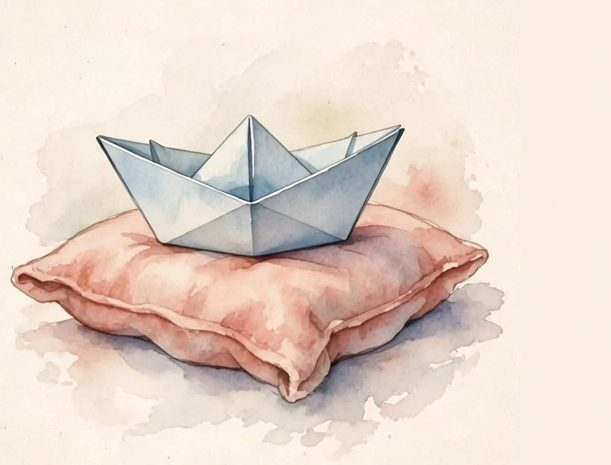
A paper boat resting on a cushion of faded coral cloth, retired in honor, soft light on the shelf.
The hall of letting them rest opens with a category the house is proud of: retired with honors. It is the standing of a dream that served its full term — carried a child through the launching years, taught its lessons, gave the future a shape — and is now stood down from duty with gratitude rather than discarded as an embarrassment. Navies retire ships this way, with ceremony, because a vessel that did its work deserves better than the breaker's yard. The boathouse applies the same courtesy at paper scale. A retired dream keeps its name, its shelf, and its record. It is simply, and honorably, no longer on call.
The honors themselves are modest, as most true honors are. A good shelf, out of the damp and the direct glare. A cushion of faded coral cloth under the hull, the house's one piece of ceremony. The name kept legible, re-inked if the years have thinned it. The register entry written in the keeper's best hand: served, thanked, at rest. There is no speech and no audience, because the honors are not a performance for visitors; they are the house's internal standard for how a faithful thing is treated at the end of its service. A dream that was launched in earnest is retired in earnest, and the symmetry is the whole of the ritual.
Retirement, it should be said, is not a euphemism, and this room is not softening a harder word. A retired dream is not a failed one wearing a sash. It is consulted no longer and apologized for never; it holds its place in the fleet's history the way a retired color hangs in a hall — not carried into the field again, and not for one hour considered rubbish. Visitors sometimes ask whether retirement can be known from mere forgetting. It can. Forgetting is what happened on the way here. Retirement is what the visitor does now, deliberately, with the boat in hand: thanks given, honors rendered, shelf assigned. The dream rests differently afterward. So, generally, does the visitor.
86A Dream Is Not a Debt
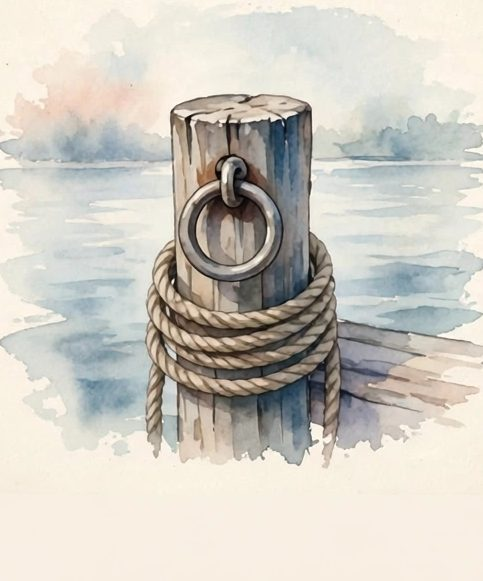
An empty mooring ring on a jetty post, its rope coiled neatly beside it in morning light.
This room keeps the house's plainest entry, and the keeper will state it without decoration: a dream is not a debt. A debt has terms, a creditor, a schedule, and a penalty for default. A dream has none of these instruments. It was a wish folded by a child and launched in earnest on the water that was available. No contract was drawn, no repayment was promised, no interest has been accruing in the dark of the shelf. The boathouse has been asked many times to produce the ledger in which unlived dreams are recorded as arrears, and the answer is always the same. There is no such ledger. There is a register of boats, which is a different book entirely.
The adult life, then, is not in arrears, and the keeper asks visitors to notice what follows from that. The years spent on work, on family, on weather, on the thousand ordinary claims of a life, were spent — not embezzled from the dream's account. Money spent on bread is not stolen from the voyage. A life is not a single fund with a single purpose, and the boathouse does not audit it as one. Where visitors arrive carrying the feeling of owing, the desk treats the feeling with respect and the arithmetic with none: the feeling is real weather, but the account it claims to describe does not exist. Feelings are received at this desk. False ledgers are not.
What is owed, if the word must be used at all in this house, runs in the other direction and is very small. A named dream is owed its name. A resting dream is owed its rest. A dream that served for years is owed a plain thanks, which the next rooms will attend to. These are courtesies, not obligations under any law the river recognizes, and they are discharged in minutes, at the shelf, without paperwork. The mooring ring on the jetty stands empty in the morning light with its rope coiled neatly, and the keeper points it out to visitors who need the picture: a mooring with nothing tied to it is not a failure of the harbor. It is a harbor, ready, at peace, with room.
87The Child Is Not a Creditor
The companion room to the last one faces the other party in the imagined transaction, and finds that there is none. The child is not a creditor. No small figure waits somewhere in the past with an account book and a disappointed expression, tallying what the grown life failed to deliver. The child who folded the boats is not a second person with a claim; the child is the visitor, earlier. Between the folder and the keeper of the boat there is no court, because there are not two parties. There is one life, at two ages, and the boathouse's shelves stand between them like a well-kept path rather than a border with a customs post.
Visitors often arrive pre-defended, ready to explain the life to the child, and the keeper lets the explanation run a sentence or two before raising a hand. Consider, the desk says, what the child's own standard for adulthood actually was. To be grown up, in the fleet's records, meant no bedtime, ice cream at will, a horse, a fort, the right to stay up all night — Hall IV keeps the whole catalogue. The child did not file a schedule of required achievements against which the adult would be measured at forty. The child wanted everything, lightly, in the manner of a person ordering from a menu in a language partly invented. It is a poor sort of creditor who never expected the bill to be paid and would not recognize the currency.
So the house's ruling, entered here for any visitor who needs it in writing, is that no claims are filed in the boathouse. The child left boats, not invoices. Whatever the adult now does with them — sails one again, retires one with honors, gives one to the river — is stewardship, not repayment, and stewardship is judged by care rather than by completion. The chair at the desk sits empty in the afternoon because nobody is waiting to be answered to. The register is closed. Whoever comes to this room braced for a small accuser in short trousers may unbrace. The only person the house will introduce the visitor to, at this shelf, is someone they have already been: a hopeful folder of paper, entitled to thanks and to rest, and in no one's debt either.
88You Cannot Fail a Dream You No Longer Hold
A paper boat given to the river, mid-stream and moving away on the morning current.
Failure requires a test still running, and this room exists to point out how few of the fleet's boats are actually under examination. You cannot fail a dream you no longer hold. A dream set down years ago — outgrown, traded, or simply completed — is not an unfinished paper left on a desk with the clock still going. Its season ran. The fold was made, the name was given, the launch was earnest, the water carried it as far as that water went. The keeper has read many registers and has never found the column visitors fear, the one with the grades. The boathouse keeps launches and landings. It does not keep scores, because the river never issued any.
The endings collected in this house are of several kinds, and none of them is a verdict. Some dreams were outgrown like shoes, honestly and without drama. Some were traded fairly for other dreams that moored alongside. Some finished their work early, having taught the wanting itself, which was their whole curriculum. A few were borrowed and have been returned to their owners with thanks. Visitors are invited to sort their own fleet by these endings and to notice how ordinary they are — the same endings, in fact, as shoes, seasons, houses, and every other faithful thing that serves for a while. A life is not diminished by having had beginnings that ended. It is composed of them.
What the boats are kept as, then, is worth stating plainly, because visitors persist in believing they are kept as evidence. They are kept as boats are kept: because they were made, because they floated, because the making and the floating were real events in a real childhood, deserving a dry shelf and a legible name. The photograph in this room shows one given back to the river, mid-stream, moving away in the morning. Nothing about it suggests a court in session. It suggests what the keeper hopes every visitor eventually sees about their own set-down dreams: a small, honest craft, complete in itself, going where the water goes, with no one's failure written anywhere on its hull.
89Some Dreams Belong to the River Now
A lantern lit at the end of the jetty at dusk, a paper boat resting beside it.
A few dreams, when a visitor meets them again, turn out to have changed ownership in the years since the shelf. They no longer belong to the visitor in any useful sense; they belong to the river now — to the general water of the past, to the decade that made them, to the whole bright climate of being seven or nine or twelve. The sailor's voyage folded by a child of a particular harbor town in a particular summer is partly that town's and that summer's forever. The visitor may carry such a boat down to the jetty with complete respect and still find, at the water's edge, that it is not theirs to keep or to sail. It is the river's. The keeper knows the moment and does not argue with it.
Giving a dream to the river is an act, and the house performs it properly: at the jetty's end, at dusk, with the lantern lit, the boat set on the current rather than thrown. The difference matters. What is thrown is being disposed of; what is set on the water is being entrusted. The river receives things without malice and, just as importantly, without keeping them against anyone. It does not file the boat under the visitor's name for later production in evidence. It carries the dream the way it has carried everything — onward, out of the bend, toward water the visitor will never see, in the company of every other entrusted thing in history.
What belongs to the river is not retrieved, and the room's last counsel is simply that. The visitor does not wade after it in the morning, does not scan the far bank for wreckage, does not treat the giving as a loan to be recalled on a worse day. The water closes over the matter with complete courtesy. At home, the shelf has an honest space in it — the kind of space Hall V keeps a picture of — and the space is not a wound in the collection. It is the collection, accurately recording that one of its boats has completed the oldest voyage there is: folded, launched, carried, and finally given to the water that was always, in the end, its proper keeper.
90Thanks, Plainly Said
The ceremony of this hall fits in one sentence, and the room is built to deliver it: thanks, plainly said. A dream carried a child somewhere real. It filled the long afternoons with a future, it gave the hands something to fold and the mind somewhere to go, it made the river wider than the map said. For service of that kind, in every other department of life, the correct tender is gratitude, and the boathouse sees no reason the fleet should be the one exception. So the visitor stands at the shelf, reads the name, and says thank you — aloud or in the register, in the plainest words available, without decoration, apology, or explanation attached.
Plainness is the point, and the keeper polices it gently. A eulogy would be the wrong instrument: eulogies are for the dead, and these dreams are not dead — they are resting, which this house has spent a whole hall distinguishing. An ode would be wrong in the other direction, inflating a paper boat into a monument and embarrassing everyone, including the boat. Thanks at conversational size is exactly calibrated to the facts. The dream was real, its service was real, and both fit comfortably inside two words said once, in a level voice, by a person who means them. The register takes the entry in the same spirit: name, date, thanked. Nothing further is minuted because nothing further occurred, and the brevity is itself a form of respect.
Visitors occasionally ask for a larger ritual — a ceremony, a form of words, something with candles and a considered text — and the house declines, politely and for a reason worth recording. Grandeur would change the subject. The thanks are not for the dream's glory; they are an acknowledgment between the visitor and their own past, and acknowledgments are kept in small denominations everywhere that honesty is the custom. A name read, a thanks said, a boat set back straight on its shelf: that is the entire liturgy of this hall, and it has never once been found insufficient by anyone who performed it sincerely. The grass sprig laid across the bow in the photograph is the house's only ornament, and even that, the keeper notes, the river provided free.
The Boathouse Desk
One desk receives all correspondence for this house — questions, corrections, and word of any boat on the shelves: a dream remembered whole, a profession once sworn to, an impossible one fondly kept, and how the fleet looks from the far bank. It is read in the order it arrives.
91The Ones That Hurt to Remember
The boathouse door closed for the night, one window lit warmly against the dark.
A few boats in the fleet are hard to take down, and this room is kept quieter than the others in acknowledgment of it. The dream itself, examined alone, is usually innocent — a voyage, a tower, a stage. What hurts is the season folded inside it: the kitchen it was folded in, the people who were at the table then, the ones the dream's crew included as a matter of course, some of whom are no longer at any table. The hurt belongs to the years around the boat rather than to the boat itself, but the two arrive together at the shelf, and the house does not pretend otherwise or hurry anyone through separating them.
The house's handling rule is simple and absolute: these boats are not required to be handled. A keeper may pass a shelf. A dream that hurts to remember may be left exactly where it rests, named from a distance if naming is wanted, thanked without being taken down, or left entirely alone for this visit and the next. Rest, in this hall, applies to visitors as much as to dreams. The boathouse has never improved a single afternoon by insisting that a particular boat be faced on a particular day, and the register contains no entry — not one — recording that a visitor was pressed. Pressing is not among the keeper's duties, and forcing is not among the house's instruments.
At night the door closes on the whole fleet alike, the easy boats and the hard ones, the thanked and the unvisited, in the same dusk and the same quiet. The keeper walks past every shelf on the last round without a clipboard, because the house's keeping does not grade its visitors' courage or pace. Some boats will wait years between handlings and be none the worse; paper is patient, and so is the river, and the visitor is allowed to be slower than both. What this room finally offers is only its lighting: even light, a closed door against the weather, and the standing assurance that nothing in the boathouse insists. The fleet keeps. The visitor keeps their own counsel. The water moves on outside, which is its own quiet word on the subject.
92The Ones That Were Never Yours
Young saplings planted in a row along the riverbank, a new small jetty below them.
Some boats on the shelves were folded, on inspection, by other hands' hopes. The admired profession carried home from a parent's table. The voyage copied from the book every child on the street was reading that year. The future described so warmly and so often by the adults that the child folded it out of loyalty and launched it under their own name by a mistake of filing. These are the borrowed dreams, and the boathouse keeps a whole section of them, because nearly every fleet contains a few. They were sailed in earnest — borrowing does not cancel earnestness — but they were never, at the fold, entirely the folder's own.
Returning them is the work of this room, and the house is careful about its tone: a return is a correction of the register, not a confession. A borrowed dream may be set down without guilt, since it was never really the visitor's to fail — a sentence the keeper will repeat as often as required, because it tends to need repeating. The boat goes to the borrowed shelf, or to the river, or back in the direction of its first owner, who is usually beyond needing it now. No apology is attached to the parcel. Returning a borrowed coat does not require an essay about the winter it was worn in; it requires only that the coat stop being carried as one's own.
What remains after the returns is worth the visitor's attention: a smaller fleet, and an honester one. Boats that survived the audit stand out clearly — the tastes that were truly chosen, the voyages that were truly wanted — and they look, if anything, better for the company they no longer keep. The saplings along the bank in this room's picture were planted on ground cleared by exactly such a correction, and the keeper uses them as the room's closing exhibit. Room made honestly is room that grows things. A visitor who leaves with fewer dreams than they brought has not been diminished by the house. They have been accurately shelved, possibly for the first time, and the fleet that remains is entirely, provably, theirs.
93Closing the Boathouse Door at Night
Every evening, at the hour when the light goes off the water, the keeper walks the shelves one last time. A hull straightened here. A name checked there. A boat that leaned in the afternoon heat set upright again. Then the door is closed, the lamp by it lit or left according to the season, and the fleet is alone with itself until morning. The ritual is plain and the house is attached to it, because this nightly act contains the whole philosophy of the hall of rest in a single gesture: the dreams are kept, and because they are kept, they do not need to be attended to around the clock by anyone.
Closing the door is the house's gentle answer to the visitor who carries the fleet in their head at three in the morning, turning boats over in the dark. Storage is what a boathouse is for. What has been properly shelved — named, thanked or left alone, assigned its place — can be left in the dark in good company, and the mind can stand down from a watch it was never required to keep. The keeper's nightly round is therefore a promise made on the visitor's behalf: someone walks the shelves so that the visitor does not have to. The fleet is looked after by the house. That is the entire arrangement, and it holds every night of the year.
The door, it should be added, opens again in the morning, which is the other half of the lesson. Nothing in the fleet is urgent; nothing deteriorates by resting in the dark among its own kind; nothing will be different at dawn except the light. Visitors who fear that closing the door on a dream means sealing it away forever have the house's direction backwards. Sealed is what happens to things no one intends to open. This door is oiled, its hinge is sound, and it is opened daily by a person whose whole profession is the keeping of other people's childhoods within easy reach. Rest for the boats and rest for the visitor are, the keeper finds, the same act — and it is performed at dusk, without ceremony, by closing a door that was built for exactly that.
94New Boats, New Hands
A shelf where old boats rest in a row and one new white boat stands among them.
It is time to correct an impression the fleet can give at first sight: the collection is not closed. New boats arrive at the boathouse regularly, and from two directions. Children bring them, in the sense that every season's children are out on the river folding and launching, renewing the fleet's lower shelves in principle. And adults bring them — folded recently, at kitchen tables and on trains, in handwriting that is nobody's but a grown person's, entered in the register without embarrassment and without a note about the folder's age. The house accepts new construction from any decade. A wish made at fifty is shelved with the same courtesy as a wish made at five.
The old boats, for their part, make room without ceremony. There is no rivalry in the boathouse between the weathered fleet and the crisp new paper, because the shelves were built long and the fleet's honor was never in its exclusivity. A new white boat standing among the old ones changes the look of the shelf for the better, the keeper finds — the resting boats seem less like an ending when something newly folded is at rest beside them, waiting its own weather. And the traffic runs both ways: more than one visitor has arrived to inspect an old dream and left having folded, almost absentmindedly, the first boat of a new fleet on the desk's spare paper.
The visitor who supposes their launching days are behind them is invited, before leaving this room, to look at the register's recent pages. The entries are in adult hands and the dates are current. The house does not ask what the new dreams are, and it grades none of them by tonnage — a boat for a garden and a boat for an ocean are entered in the same ink. What the house provides is only the standing facilities: paper, a desk, a shelf, a river. Folding was never a childhood competence that expires; it is a human one that goes quiet, like a language unspoken for years, and comes back to the hands faster than the hands expect.
95What Is Passed On
A river at peace under a wide calm sky, no boats on it, evening.
What passes from the fleet to the next hands is rarely, on inspection, the dreams themselves. Children do not inherit specific voyages; the would-be sailor's child folds a detective's boat, and the lighthouse keeper's folds one for the circus, and the boathouse registers this cheerful disobedience as the normal course of things. What is actually passed on is lighter and more durable than any particular wish: the permission. The sight, absorbed young and without lectures, of dreams being kept with respect — launched in earnest, named accurately, rested without shame. A household where the old boats are spoken of fondly teaches the folding of new ones better than any instruction could.
Also passed on, and worth listing plainly, are the instruments. The skills learned for a dream travel down the years on their own: the folding, the knotting, the star-names, the patience with weather. The tastes travel too — for harbors, for night trains, for high shelves with ladders. And the stories travel best of all: the dream told at dinner as a good story rather than as a joke at the teller's expense or a warning to the young. A child who hears an old dream told that way learns the whole doctrine of this house in one hearing, without a single rule being stated. The story is the curriculum. It always was, in every family that has one worth telling.
The visitor is therefore excused from engineering the inheritance, which is this room's last and most restful word. No program is required, no testimony needs scheduling, no boat needs to be pointed out at the significant moment. A boathouse kept in good order teaches by existing, and a life that keeps its own fleet honestly — thanked, rested, a few boats still out on the water — is itself the whole bequest. The river in the picture runs at peace under a wide sky with no boats on it at all, and the keeper chose the image deliberately: what is passed on travels quietly or it does not travel. The water carries it. The hands change. The folding continues, downstream, out of sight, on schedule.
96The Water Is Not Sorry, and Neither Are You
The hall of rest closes where it was always going to close: at the water. The river has carried every boat this house ever launched, and carries still, and holds no opinion about any of them. It is not sorry for the ones that sank in the first pool below the jetty, nor for the ones that sailed grandly out of the bend, nor for the fleet that never left the high shelf at all. Sorrow is a judgment, and the river — the oldest keeper on this bank, whose register is written in current and level — has audited the whole history of the boathouse and filed no judgments in it anywhere. The water simply receives, carries, and continues, which is the house's model for how a past is to be regarded.
Sorry implies a wrong, and the water, consulted on the point, can find none in the record. Boats were folded in earnest. They were named, launched on real water, carried a while by real children, and set down as the years required. Some sailed again; most rested; a few were given back to the current in the dusk with the lantern lit. That is a complete history, told in the previous rooms one shelf at a time, and a complete history is not a damaged one. The keeper has noticed that visitors arrive apologizing to the river as if it were the injured party, and the river's answer, delivered daily at no charge, is the sound it always makes: water over stones, entirely unbothered, going about its business downstream.
So the visitor may take the river's position as their own, and this room exists to issue that standing in writing: not sorry, and — the keeper adds, because the point is missed as often as its opposite — not required to perform not being sorry, either. Defiance is just apology turned inside out, and the river practices neither. It continues. The hall's whole instruction reduces, in the end, to that single verb, applied at the shelf: the fleet kept, the names known, the door closed at night and opened in the morning, the water going past the jetty in all weathers without commentary. Letting them rest ends, appropriately, in rest. The next hall is downstairs, where the steps are. Visitors going that way are asked to take their time on the path.
97Step One: Go Down to the Boathouse
The path down to the boathouse in early light, dew on the grass at its edges.
The twelve steps of this hall are rooms, not orders, and the keeper says so at the door before anyone sets foot on the first one. A visitor may walk them in an afternoon, or across a year, or enter only the rooms whose doors happen to open, and no record is kept of the pace. Step one, in any case, asks for the simplest motion in the whole house: go down to the boathouse. In fact, if the visitor is standing in one — the attic, the drawer, the shelf where the kept things are — or in mind, if the boathouse is the one this page has been building. Either way, the step is only the walking toward, done on purpose, at whatever hour the visitor keeps.
The action of this step is arrival, and nothing beyond arrival is scheduled. No boat is taken down at step one. Nothing is decided, committed to, or even examined closely; the fleet is looked at from the doorway, in the early light, the way a person looks at a garden before deciding where to kneel. The path down is part of the practice rather than a preliminary to it, because the whole difficulty this hall exists to address is not technique but approach — the years of walking past the shelf, the attic door passed a thousand times with the eyes politely averted. To walk toward the kept things deliberately, once, is already to have changed the terms of the acquaintance.
Some visitors stop at step one for a long while, and the house counts that complete for the day, and for many days after. Standing in the door with the dew still on the grass outside, taking in the rows of hulls and the smell of dry paper and river wood, is not a failed version of the later steps. It is the foundation they all stand on: the dream, seen in place, in its keeping, accused of nothing. The keeper has watched visitors accomplish more in one unhurried doorway than in a month of programs undertaken at speed. When the visitor is ready — that day, that year — the second step is ten feet away, inside, at the first shelf. It will keep.
98Step Two: Take One Boat Down
One paper boat taken down from its shelf, its space left outlined in dust among the resting fleet.
Step two: take one boat down. One only. The fleet is large, the shelves are long, and the hands, the keeper observes, are two — the steps of this hall are sized to the hands. A visitor who attempts the whole fleet in an afternoon will end by handling none of it well, and the house is not interested in thoroughness at that price. One boat comes down from its shelf, is set on the desk in the good light, and leaves behind it that eloquent space outlined in dust which the room's picture shows. The rest of the fleet stays where it is, undisturbed, in the keeping it has had for years. It will keep a while longer.
Choosing which one is not a test, and the keeper interrupts visitors who treat it as one. The boat that catches the eye is a correct beginning. The one whose name is half-remembered and itching is a correct beginning. The one nearest the door is a correct beginning, and so is the one that has been avoided longest, if the hand goes to it willingly. The desk advises against only one method of choosing: selecting the hardest boat first, out of an instinct that the exercise should hurt to count. The house does not run on that fuel, in this hall or any other. Earnestness is required here. Severity is not, and never has been, among the launching equipment.
Hold it a moment, when it is down — that is the whole remainder of step two. A paper boat in adult hands feels smaller than memory promised and considerably lighter than its reputation, and the keeper asks visitors to register both facts, because they are the step's real yield. The dream was always portable. It crossed decades in a drawer without assistance. It never required the strength the visitor feared it would demand, and it does not require it now, resting across two palms with its fold still true. Set it on the desk. The steps that follow will attend to it one at a time, and none of them is heavier than the boat.
99Step Three: Read the Name on Its Side
Step three: read the name on its side. Every boat in the boathouse was named at its launching — the voyage, the profession, the impossible thing — lettered in the hand and the vocabulary of the time, sometimes along the hull in a child's best capitals. The step asks only that the name be read, exactly as it stands, the way a register is read: attentively, completely, and without editing in transit. To sail around the world. To keep a lighthouse. To talk with animals. Whatever the side of the boat says is the entry, and the visitor's whole task at this step is to let it say it at full size, in the original wording.
Not, the keeper emphasizes, the improved adult version of the name — the tasteful paraphrase, the version with the grandeur sanded off for company. And not the embarrassed version either, the one prefaced with a laugh so the room will know the visitor knows better now. Names in this house are records, and records are read, not revised. The child who lettered the hull was not drafting a press release; the name was set down in complete earnest with the facts then available, and it has the standing of any other honest entry in the register. Reading it as written — neither inflated nor apologized for — is a small act of accuracy, and accuracy, the house finds, does most of the work of this step by itself.
Some visitors laugh when the name is read, and some go quiet, and some do both in the same minute, in either order. The desk has seen every combination across the years and files them all as correct registry entries; there is no standard response kept on file against which the visitor's is measured. What matters is only that the name was said as written, accurately, once. Visitors are sometimes surprised at how much of the hall's remaining work that single reading quietly completes — how the boat, named in full, seems to settle on the desk, neither swollen nor shrunken, its true size restored by nothing more technical than being called, correctly, by its name.
100Step Four: Remember Who Folded It
A paper boat on a table beside a magnifying glass, its folded seams showing in fine detail.
Step four: remember who folded it. Not the age in the abstract — the boathouse has no use for a defendant described as myself, younger — but the particular child, in the particular season, at the particular table. The kitchen with the cloth on it. The school desk with the initials cut into its edge by an earlier tenant. The summer of the long evenings, or the winter of the early dark, or the year of the broken arm when the folding was done one-handed and badly and launched anyway. The step asks for the folder in focus, because a boat examined beside a magnifying glass shows its seams, and the seams say exactly whose hands were learning as they went.
The folder had reasons that made sense at the time, and information that was incomplete in ways that were not faults. The child who folded the world voyage had a globe, an atlas, or a song; the child who folded the lighthouse had seen one once, from a car window, and built the rest out of weather. Remembering who folded the boat replaces a vague and oddly prosecutable figure — one's younger self, summoned to account — with a specific person the visitor can regard fairly, in their actual circumstances, with their actual knowledge. The keeper considers this replacement the step's whole purpose. Cases collapse, in this house, the moment the folder comes into focus as a child doing their honest best with a sheet of paper.
Accuracy, not tenderness performed on command, is what the register records at step four. Some folders were hopeful; some were lonely; some were showing off; some were copying the friend at the next desk, which the borrowed shelf in Hall VIII exists to honor. Whatever is true is the entry, and the desk tolerates every honest answer and no decorated ones. Visitors who cannot remember the folder precisely are not failed by the step — an approximate season, a probable kitchen, a likely year are entered in pencil and accepted. The register prefers an honest approximation to a confident invention, in this step as in all the others, and the boat, its seams examined, goes back on the desk ready for the fifth.
101Step Five: Note What It Was Really Asking
A sheet of paper mid-fold on a table, other finished boats resting nearby in soft light.
Step five: note what the dream was really asking. Beneath most voyages, when the register looks at them across enough years, a plainer request is found folded inside the grand one. To sail around the world was often asking to be capable, and trusted, and gone honorably toward a horizon. To keep a lighthouse was asking to be stationed somewhere important, with a lamp, and let alone to tend it. To be famous was asking to be seen clearly by people whose opinion had weight. The step asks the visitor to unfold the boat one layer further and write the asking down, in plain words, one line in the register, without embarrassment at how modest it turns out to be.
Noting it is a clerical act, and the house treats it with clerical calm for a reason: a noted ask can be checked against the record. Many of them, it turns out, were answered — sideways, in another currency, by the life as it actually went. The capability found another post. The being-elsewhere arrived as a different town, a different trade, a different language at the kitchen table. The lamp got kept, at a desk, for years, for people working late. The desk enters both lines where they are true: the ask as folded, and the answer as delivered by other means. Visitors reading the two lines together often sit back, and the keeper has learned to let the silence after that do its own work.
Some asks, of course, are still open, and the note at step five says so without alarm and without promotion to an emergency. An open ask is a line in a book. It will be consulted once more, at step seven, when the question of a smaller version is put to the water — and not obeyed at step five, where it has no authority and asks for none. The house is firm about the sequence because it has seen the alternative: a visitor discovers the ask, mistakes it for a summons, and leaves the boathouse at a run. Nothing in these twelve steps runs. Note the asking, close the register, and let the boat rest on the desk while the kettle does its unhurried work.
102Step Six: Thank It for Its Service
Step six: thank it for its service. Service is the register's word and the keeper defends it as the exact one. The dream worked. For years, in some cases, it organized the afternoons, taught the hands their knots and the eyes their stars, gave the future a shape definite enough to walk toward, and kept a child's seriousness employed at full stretch. Work of that duration and quality is thanked in every other department of life without anyone finding the transaction strange. The step therefore instructs the visitor to do for the boat on the desk what Hall VIII prescribed for the fleet: say the thanks plainly — aloud, or in the register — in the smallest words that will carry it.
One clarification is entered here because visitors reliably need it: a thanks at step six is not a farewell. The sequence of the steps is deliberate. Gratitude comes before the questions of sailing and resting, not after them, because in this house thanks is not a closing ceremony performed on things being dismissed. Some boats thanked at this step, at this desk, in this level voice, are launched again at step eight by the same visitor in the same hour. Others are returned to rest with the thanks as their whole completed business. The gratitude is identical in both cases and commits the visitor to neither. It simply pays, in the house's small currency, for service honestly rendered and honestly remembered.
Visitors sometimes feel foolish thanking a paper boat, and the keeper receives this confession with the register open and a comparison ready. The same visitor has thanked waiters, weather, landlords, luck, and referees, all without embarrassment and several with considerably less claim on the gratitude. The boat, by contrast, showed up for years, in all weathers, at no wages. Its claim is at least as good as the weather's. So the thanks are said, the entry is made — name, ask, thanked — and the boat sits on the desk in the lamplight with its account in that one respect settled. The remaining steps will decide its future. This one settled its past, which turns out to be the heavier of the two.
103Step Seven: Check Whether a Smaller Version Floats
A small new paper boat floating in a basin of water on the jetty, being tested.
Step seven: check whether a smaller version floats. This is the only step in the hall with a basin in it, and the apparatus is deliberately humble — a basin of river water on the jetty boards, in ordinary light. The check is practical rather than symbolic. Take the asking noted at step five and fold its smaller version: the weekend sail in place of the world voyage, the lamp and the chair and the evening watch in place of the lighthouse, the local mystery in place of the famous cases. Set it on the basin's water. Paper answers quickly and without diplomacy. It floats, or it settles, or it takes the water bravely and goes over, and all three answers are information of the same dignity.
The permission structure of this step is stated in writing at the desk, because the house insists on it: a visitor may try the smaller version. Nobody prescribes it. The step is an offer of a test, not the first item of a program, and it may be declined in full — the question asked abstractly, the basin left dry, the boat returned to its shelf with the entry checked, not applicable written in the keeper's hand. Many boats pass step seven exactly so, their visitors content to have established that the matter was considered honestly and closed honestly. The house records a declined test with the same respect as a performed one, and the register shows no difference in the ink.
If the small version does float, that too is only information, and the room's last caution is against promoting it. Floating is not a summons. A boat that rides the basin prettily has demonstrated one fact about paper and water; it has not issued the visitor a schedule. The keeper has launched small versions from this jetty that sailed one basin-length and were retired with honors on the spot, their entire work complete in four feet of water. Others went on to the river. Both outcomes stand in the register as successes of the step, because the step was a check — and a check honestly made has no failing grade. The basin is emptied onto the grass either way, and the hall proceeds to the fork it has been approaching all along.
104Step Eight: If It Asks, Launch It Gently
A paper boat just leaving the jetty's shadow into sunlight, launched gently on calm water.
Step eight: if it asks, launch it gently. The conditional carries the whole step, and the keeper underlines it for every visitor who reaches this room with a boat in hand. Most boats do not ask. Of those that do, the asking — checked at step five, tested at step seven, thanked at step six — is by this point unmistakable: the smaller version floated, the season is right, the asking underneath the old name turns out to be still addressed to the present life, and the visitor's hands, reaching the jetty, are already arranged around the hull. Then, and only then, the step gives its instruction. Launch it. The water is there. It has been there the whole time, which is rather the point of the house.
Gently is the method, and it is specified as carefully as the launch itself. No announcements are made. No stakes are published against the outcome, no audience assembled whose disappointment would have to be managed, no return date promised to anyone including the launcher. A gentle launch is sized so that its result — a fine sail, an early settling, a long drift out of the bend — arrives as information rather than as verdict. The dream that goes back on the water at this step travels the way the fleet's boats have always traveled best: at paper scale, on the water that is actually there, under a name read accurately at step three. Anything larger is not a launch. It is a wager, and the house takes no wagers.
What happens afterward belongs to the river, and to shelves of this house that have not been built in this hall. The keeper logs the launch in the register — the name, the date, the weather, the state of the tide of years — and leaves the entry open in pencil. Some of the boats launched from this step are still out. A few have come back to rest with honors and a longer story in the log. One or two are simply unreported, and the register does not chase them; a launched dream owes the house no bulletins. The visitor returns up the path with empty hands and, in the keeper's long observation, usually with lighter ones. The jetty shadow is behind them. The sunlight, in the picture kept for this room, is ahead of the boat.
105Step Nine: If It Rests, Let It Rest
Step nine is the twin of step eight, and the house gives it equal size, equal light, and the better shelf: if it rests, let it rest. The fork of the hall arrives here, and the keeper wants the resting branch understood as a positive state rather than the absence of one. A boat examined through seven steps — named, remembered, unfolded to its asking, thanked, honestly checked — and found, at the end of all that attention, to be a resting boat, has not failed the process. It has completed it. Rest, arrived at this way, with the eyes open and the register filled in, is the considered verdict of the whole hall on most of the fleet that passes through it.
Letting it rest is a set of small, specific abstentions, and the desk lists them because vagueness is no help at this step. No daily checking of the shelf to see whether the feeling has changed. No retelling of the dream at dinners as a joke at the teller's expense, which is a way of keeping it awake and miserable. No recruiting of friends to argue it back onto the water. No standing at the jetty in all weathers rehearsing a launch that the steps did not arrive at. The boat is kept, not exhibited; kept, not litigated; kept, not worried at. Visitors recognize the list, usually, as a description of several habits they can retire along with the boat's commission.
Some visitors find nine harder than eight, and the keeper is not surprised and says so. Launching has weather and drama; resting has only keeping, done quietly, at shelf scale, forever. But the fleet at rest is the house's main collection and its entire reason for existing — the boathouse was not built as a departure lounge. A dream at rest here is in the best company on the river: named, thanked, honored, among hundreds of its kind, in dry air and even light, with a keeper walking the shelves at dusk. The visitor leaves it there and goes up the path, and the register's entry closes with the words this room exists to make possible: at rest, by decision. It is one of the best endings the house keeps.
The Boathouse Desk
One desk receives all correspondence for this house — questions, corrections, and word of any boat on the shelves: a dream remembered whole, a profession once sworn to, an impossible one fondly kept, and how the fleet looks from the far bank. It is read in the order it arrives.
106Step Ten: Fold One New Boat, However Small
A paper boat resting on calm water at the bank, seen from the grass above the river.
Step ten: fold one new boat, however small. The fleet, by this point in the steps, might be mistaken for an archive only, and this step corrects the mistake with a sheet of paper. The folding skill does not belong to the visitor's childhood, on permanent loan to memory; it belongs to the visitor, at their present age, in their present hands. The step is simply to use it once — on any wish currently to hand, however ungrand: a boat for a garden, a course of evenings, a letter finally sent, a winter of early mornings. The house supplies paper at the desk without being asked twice, and has never yet required a visitor to justify the tonnage of what they folded.
However small is the load-bearing phrase of the step, and the keeper will explain it to anyone who suspects a catch. There is no catch, but there is a bias to overcome: the adult instinct to grade wishes by size, to fold only what looks defensible, to pre-shrink every wanting until it passes inspection as sensible. The childhood fleet was folded under no such inspection, which is precisely why it filled the shelves. A new boat made under the old freedom — folded first, appraised later, named in earnest — also corrects the register in an important way. It demonstrates, in fresh ink and the visitor's current hand, that launching was never a competence of one age. It was a practice, and practices can be resumed at any point on the river.
Name the new boat, as the fleet was named, in full and without irony — and then set it where current things are kept, not on the old shelves. The distinction matters more than it looks. The new fleet has its own geography: the desk, the window, the life as presently lived. Old boats mistaken for current obligations have caused most of the confusion this house exists to clear, and the confusion is avoided by shelving honestly from the first fold. The new boat may sail for years or settle in the first pool; the register will record either without surprise. What step ten certifies is only the folding itself — proof, kept in the visitor's own handwriting, that the hands remember the work.
107Step Eleven: Watch a Child Launch Theirs
The boathouse door left open, morning light falling across the shelves of resting boats.
Step eleven: watch a child launch theirs. Sooner or later the path offers the sight to every visitor who walks it, and the house simply asks that it be recognized when it comes: a child at some modern riverbank — a stream, a flooded gutter after rain, a basin on a step — setting a folded wish afloat with the whole heart, in complete earnest, under a name. The visitor's step is not to launch anything at this station. It is to watch, properly, which turns out to be a skill with rules of its own, as learnable and as losable as folding. The keeper counts this among the most important steps in the hall and has given it the room with the open door.
The watching has three abstentions, and the desk states them plainly. Do not correct the fold toward seaworthiness; the boat is the child's, and its chances are the child's business. Do not narrate one's own fleet over the launch, however relevant the old voyages may feel; the water is occupied. And above all, do not board. The child's launch is not the visitor's vessel — not a second chance at the world voyage, not a proxy fleet, not a way back onto the water by standing close to someone who is on it. The children launching boats now are their own first chance, entire and unrepeatable, and the dignity of this step is to guard that firstness rather than borrow against it.
What the watcher may do, the room lists with equal plainness, because abstention is only half of watching. Hold the coat. Mind the dry shoes. Answer questions accurately when asked, including the hard ones about sinking. Take the launch exactly as seriously as the child does, which is to say completely, and let the seriousness be visible. Witnessed that way, a child's launching is one of the sights this river exists for, and the keeper — who has watched hundreds from the boathouse door, in morning light like the picture kept for this step — reports that the water receives every single one alike: without commentary, without comparison, and without the slightest interest in whose hands did the folding.
108Step Twelve: Leave the Boathouse Door Open
Step twelve: leave the boathouse door open. The steps end where they began, with the house itself, and the action is the smallest in the hall: a door, unlatched, on a working hinge. A closed door is for the night — Hall VIII keeps that rite, and it stands. But the open door is the house's daytime posture toward the world, and the final step asks the visitor to leave it so: toward the path, toward the river, and toward the visitor's own future self, who may come down that path in five years or thirty with another boat in hand and no appointment. The house does not take appointments. The open door is the whole admissions policy.
Leaving it open carries a meaning larger than ventilation, and the register states it once, for the record. The fleet is not sealed. The register is not closed. The matter of the childhood dreams is not concluded once and for all, filed under a year, and exempted from weather. Rediscovery in this house is weather — it returns when it returns, by moving box and dinner story and a child's question — and a house that expects weather keeps its door on the latch side of open. Nor does the open door invite looting or hurry. It invites return: the same visitor, another season, another boat, the steps walked again at the new pace. The threshold in the picture is lit because the house keeps it that way, deliberately, for whoever is on the path.
The steps may now be walked again for another boat, or not walked at all for years, and the house keeps either way with identical care. What the twelve steps leave behind, when they work as intended, is not a program completed and framed but a path worn smooth between the visitor and the shelves: down in the early light, across the boards, back up at dusk, in any weather, without dread in either direction. That path — more than any single launch or retirement — is the hall's true exhibit. The visitor made most of it simply by arriving. The keeper's last entry for the hall is always the same, and it is short: door open. River running. Fleet at rest, or under sail, as each boat asks.
109A Guide for the New Arrival
The boathouse seen from across the river, a guide's lantern burning on its porch.
For the new arrival, then, from the beginning, briefly: this is a boathouse at a river bend, where the paper boats of childhood are kept. Every child folded dreams — voyages, towers, stages, impossible things — and set them afloat in earnest, and most of those dreams were set down along the way, not dropped but moored, as the years required. The house keeps them on its shelves, hulls dry, names legible, in the care of the Keeper of Paper Boats, whose desk stands by the door and whose register is open to any visitor. There are no tickets. The requirements for entry are dry shoes, an accurate memory where one is available, and a willingness to let resting things rest.
A visit goes like this, in whatever order the visitor prefers. Walk the halls in sequence or go straight to the shelf that concerns you; the house was built in numbered rooms but it is nobody's examination. Boats may be looked at, named, taken down, thanked, and returned. Questions are answered at the desk, briefly and without ceremony. Some visitors come for one boat and stay for the fleet; some come for the fleet and find that one boat was the errand all along. A few launch something small from the jetty before they leave, and a great many launch nothing at all, in any visit, across decades of visits, and are recorded in the register with exactly the same respect.
Three practical notes complete the guide. First, nothing is sold here and nothing is owed here; the house trades in keeping, not in outcomes. Second, those who remember no dreams at all are regular and welcome visitors — the halls contain rooms for the almost-remembered and the never-folded, and the keeper is unembarrassed by an empty-handed arrival. Third, the porch lantern in the picture is lit for exactly the person reading a guide at a distance and wondering whether the path is worth it. It is a short path, the grass is kept, and the water at the bottom of it has received every kind of boat there is. Come up from the jetty when ready. The door, as the last of the steps prescribes, is open.
110Questions People Ask at the Desk
The Boathouse Desk: a wooden desk with a register and a lantern, shelves of paper boats behind it.
The desk collects the questions visitors actually ask, and keeps the answers as short as the questions deserve. Is it too late to sail one of them again, the visitor asks. The desk answers: the river has taken launches at every age the register knows, including this one, and it files no closing date; late is a word for trains. Must something be done about mine, the visitor asks. No. The house offers twelve steps and insists on none of them; a fleet entirely at rest is a complete and respectable outcome of any visit. What if the dream seems too grand to say aloud, the visitor asks. Say it at the shelf anyway. The shelf has heard grander, from smaller people, in worse handwriting.
What if no dream can be remembered at all, the visitor asks — this one oftenest, and usually at the door, as if it disqualified the visit. The desk answers: then the visit is about the remembering, which is a respectable errand, and the fleet is full of almost-names and half-hulls that resolve themselves on the second or third look. What if mine came true, the visitor asks, a little defiantly. Then it is not on these shelves; it is moored in Hall VI among the sideways fulfillments, and the house congratulates the harbor without reservation. What if the whole thing is only paper, the visitor asks. It is, the desk says. It always was. That was never the weakness of the arrangement; it was the entire design.
The last question of the day is usually the practical one, and the desk is fondest of it. What is the keeper actually for, the visitor asks. Keeping, the desk answers: the door, the register, the even light, the refusal to let a single boat be mocked or invoiced or hurried in this house. Everything else — the naming, the thanking, the rare and gentle launchings — visitors do themselves, at their own shelves, in their own weather. The desk merely guarantees the conditions. The lantern is lit, the answers are short, and the fleet, which is the real exhibit, waits behind the desk in rows. Most visitors, having asked their questions, find they have fewer than they brought. The desk counts that as the answers working.
111Questions Skeptics Ask, Answered Carefully
The skeptics come to the desk too, and the house answers them carefully, beginning by conceding everything that is true. Is this not, the skeptic asks, nostalgia with shelves — sentiment arranged in rows and charged with meaning it has not earned. Partly, the desk answers, and the partly is not hidden. Remembering is part of the house's material, as wood is part of a boat's. But the shelves are not arranged to make anyone wistful; they are arranged to make the record accurate. A fleet kept by name, with its endings honestly classified — outgrown, traded, borrowed, rested — is a plainer thing than nostalgia, which keeps only the glow and discards the paperwork. The house keeps the paperwork.
Paper boats sink, the skeptic says, and quickly. They do, the desk agrees; it has never entered a claim otherwise, and the register records sinkings in the same ink as sailings. The sinkings were never the disgrace of the arrangement. A boat's use was the floating — brief as it often was — and the naming, and the earnestness at the water's edge, none of which is retroactively canceled by the water doing what water does. A song is not refuted by ending. The skeptic is invited to consider that the fleet's fragility is stated on its face, in its material, and that a house which hides nothing about its paper is harder to accuse of selling anyone a steel-hulled promise.
Adults have real problems, the skeptic says, finally — roofs, debts, the whole weather of a grown life — and a boathouse of childhood wishes is a decoration against all that. Granted, entirely, the desk answers; the house has never claimed a kept fleet repairs a roof, and it refers the visitor to the next rooms for the full statement of its limits, posted without embarrassment. What the house holds is narrower and, it maintains, real: that a person's early wantings were serious events, that they can be kept accurately rather than mocked or invoiced, and that doing so costs little and settles much. The skeptic is thanked for the questions. The desk answers carefully because they are good ones, and because a house that cannot state its limits plainly has not yet found them.
112What a Visitor May Take Home
A visitor's bench facing the river, a single paper boat left on it in the light.
Visitors ask, reasonably, what may be taken home, and the room answers with the house's short list. No boats leave the shelves. The fleet is not the visitor's luggage and never was — it belongs to the keeping, to the record, to the years that folded it, and it stays in the dry air and even light it was promised. What leaves with the visitor is lighter than any hull and travels better. First among takeables: the name of one dream, accurately remembered, said once in full at the shelf. A name carried away correctly weighs nothing, requires no wrapping, and — the keeper has verified this across decades — is still in use years later, in kitchens and at desks the house will never see.
Second, the visitor may take the distinctions, which are the house's real trade goods and are given away freely at the door. Forgotten is not false. Set down is not dropped. Resting is not failing. A dream fulfilled sideways counts in full. Borrowed dreams may be returned without guilt. These pack flat, survive any journey, and apply in departments of life far from the river — the keeper has had reports of them working in offices, in marriages, in the small hours. They are not framed, because framing would make them ornaments, and they are meant as tools. The bench in the picture faces the river so that visitors can sit a while with the distinctions before deciding which ones are theirs to carry.
And nothing else is on offer, the room concludes, because the house is honest about its shop. There is no method to take home, no program in a folder, no merchandise at the desk, no certificate of having visited properly. The visitor who arrived hoping to be issued a new life at the jetty is referred, kindly, to the river, which issues nothing and has never needed to. What the boathouse sells — it does not sell — is keeping: of boats, of names, of measures. What it gives is smaller and better. A name. A distinction or two. The memory of even light on old paper. Visitors carry these up the path without noticing the weight, which is the keeper's favorite evidence that the weights are right.
113The Boathouse in Ten Years
A key on a hook by the boathouse door, the resting fleet visible on its shelves beyond.
In ten years, the keeper forecasts, the boathouse will look much as it does in the forecasts it has survived before: the roof mended twice more, the ivy further along the wall, the jetty re-boarded once, the river — the register underlines this entry — the same width. Houses like this one change slowly because their material does not date. Children will still be folding wishes out of whatever paper the decade provides, launching them on whatever water is near, and setting them down under the same quiet pressures the earlier halls describe. The fleet will be larger. It is always larger. New shelves will have been built along the back wall, in the same plain style, by whoever keeps the house then.
For keepers change, and this room says so without melancholy. The handwriting in the register will be a different hand. The desk's answers will be given in a different voice, possibly a drier one; the house has survived keepers of several temperaments and expects to survive more. What does not change is the charter, which is short enough to survive any succession: the boats are kept, the names are kept legible, nothing is mocked, nothing is invoiced, nothing is hurried, and the door opens in the morning. A charter of that size can be taught in an afternoon to whoever takes the key, and the key — the room's picture shows it — hangs on its hook by the door, where it has always hung, available to the next keeper in line.
The forecast's last entry is the reason the house expects to be needed at all, and it is not a gloomy one. Forgetting continues at every age, as the next room records, which means the supply of visitors is renewed by life itself: the folders of this decade are the arrivals of three decades on, coming down the path with a name half-remembered and a boat to find. The boathouse in ten years will receive them exactly as it receives visitors now — briefly, accurately, and without surprise. The keeper making this forecast does not expect to be believed in detail and does not require it. The roof, the ivy, the register, the river: the proportions are right, and a house with right proportions in a bend of the river tends, on the evidence, to last.
114Forgotten at Every Age
Forgetting, this room records, is not a childhood specialty that ends at majority. Adults fold dreams too — at twenty-five, at forty, at sixty — with the same earnestness and the same paper, and set them down by the same quiet processes the middle halls described: no announcement, no ceremony, just a season in which the boat stops being visited. The trade taken up and traded away. The language learned for a life that went elsewhere. The emigration, the orchestra, the small hotel by the sea. The boathouse takes boats from every decade of a life without distinction, and its upper shelves — the recent foldings, creases still sharp — are filling faster than the lower ones ever did.
The mechanisms are the familiar ones, and the room lists them without gloom, because familiarity is half their cure. A new dream moors alongside and takes the water, as new dreams have done since the launching years. The practical years arrive with their honest weight. Being told a thing is silly does at forty much what it did at nine, only faster, because adults assist in their own silencing. And the quiet ones go first, at every age: the modest wishes, undemanded and undefended, are set down earliest and missed latest. Visitors who believed their forgetting was finished with childhood are shown the upper shelves and, usually, laugh once — the recognition laugh this house knows well — because several of the recent boats are unmistakably theirs.
The entry is made, finally, without a verdict attached, because the house attaches none. A life that keeps launching and keeps forgetting is, on the register's evidence, a life still launching — the traffic is the sign of the river in use, not of a harbor in failure. The oldest boat in the fleet and the newest are in different hands of what is recognizably the same person, and the shelf that holds both is the truest portrait the house owns. Completeness was never the collection's aim; no fleet is kept whole, and none needs to be. What the boathouse preserves, across every age of folder, is the standing fact that the folding happened, in earnest, again and again, all the way down the years.
115The Goal Is Not to Sail Them All
The boathouse imagined in ten years: the same house, ivy grown along its wall, the river unchanged.
The goal is not to sail them all, and the Long View posts the sentence early because everything after it depends on the visitor believing it. A person can arrive at this house, walk its halls in good faith, and still smuggle in the old arithmetic: the fleet as a program, every boat relaunched, every dream collected and closed like accounts at a year-end. The boathouse declines the arithmetic in full. It is not a debt office — Hall VIII settled that — and it is not a departure board either. Of the hundred boats a life may fold, most are for the shelves, and the shelves are not a waiting room for a total relaunch that a sufficiently determined visitor could schedule.
A fleet mostly at rest, with a few boats out on the water, is the house's picture of a well-kept life, and the room offers the proportions without apology. Attention is finite. Seasons are finite. Strength arrives in tides, as every hall of this house has recorded, and paper was never meant to hold a permanent commission. The keeper has known visitors who relaunched one boat in a decade and kept it beautifully, and visitors who relaunched none and kept the whole fleet beautifully, and the register draws no line between their standings. What it records, in both cases, is keeping. Sailing is one of keeping's occasional weathers. It was never the climate, and it was never the quota.
What the house hopes a visitor carries out of the Long View is not a tally but a posture, and the room describes it once, plainly. The fleet kept. The names known. The door open. One or two boats on the water when the weather and the asking are right, and no muster taken on the rest. That is the whole ambition of the boathouse, and it is enough — enough for a childhood to be honored by, enough for an adult life to be measured beside without flinching, enough for an old age to sit down next to on the bench. The ivy grows, the river holds its width, and the fleet, mostly resting, entirely accounted for, wants for nothing. The goal was never the sailing of them all. It was the keeping of them well.
116What the Keeper Does All Day
Paper boats of every era on one long shelf, from crisp and white to fragile and weathered.
What the keeper does all day is a fair question with an undramatic answer, and this room gives it in full because the house believes in showing its work. The day begins with the door: unlatched at first light, the path checked, the river read for its weather the way other workers read a board of figures. Then the shelves are walked, slowly, the whole fleet, in order. A hull straightened. A leaning boat set upright. A ribbon retied where the knot has slackened in the damp. The register is opened to the day's page and the overnight entry made — launches, landings, visitors expected, repairs due — in the hand the next keeper will have to learn to read.
The middle of the day belongs to maintenance and to the desk, in proportions set by the season. Maintenance is small acts done on schedule: a fold eased back along its crease with a careful thumb, a name re-inked where the light has thinned it, dust lifted from the long shelves where the boats of every era rest from crisp to fragile. At the desk, the keeper answers the questions collected in the earlier rooms of this hall, shows new arrivals the way of the house, and enters each visit in the register with the brevity the form allows: name, errand, outcome. Nothing in the day is large. The keeper has kept houses before and reports that keeping never is; it is a hundred small correct acts, repeated at the right intervals, in all weathers.
At dusk the day completes its shape: the last round of the shelves, the lantern attended to, the door closed for the night, as Hall VIII describes. The keeper's work is then done, and it is done — the room's favorite observation — visibly nowhere. The fleet does not applaud. The register does not glow. A house kept well produces no event to point to, only the absence of losses that would otherwise occur unnoticed: the name that would have faded, the fold that would have torn, the visitor who would have found a locked door. The keeper counts that absence a feature. A place that runs on keeping rather than on occasions stays calm in all weathers, and calm, on a river, is not nothing. It is most of what the boats were ever promised.
117A Note from the Keeper of Paper Boats
I keep other people's childhoods on shelves, which is a stranger profession than I expected when I took the key, and a quieter one. Visitors imagine the work is in the boats. It is not. Paper is patient and asks for little — dry air, even light, a hand now and then along a fold. The work is in the keeping of measures: in refusing, daily and in both directions, to let a single boat in this house be made larger or smaller than it is. Larger, by the visitors who arrive wanting their dream to have been a prophecy. Smaller, by the ones who arrive pre-laughing, hoping I will join in. I join in neither. A boat is the size it was folded, and my whole employment is to keep the record at that size.
A word, then, to the visitor who found one of theirs here, since most readers of this note have. Your boat was kept as found. I have made no repairs to the past and permitted none: the fold that tore in the drawer is the fold on the shelf, the name thinned by light is re-inked only where the letters were certain, and nothing about the keeping has improved your dream into a lesson or diminished it into a joke. If you take it down and find it smaller than you feared and lighter than its reputation, that is not my doing. It was always that size. The years stored it at the wrong scale, as years do, and the shelf has simply stored it at the right one.
The register is open on the desk as I write this, and the day's entries are what they always are: a name read accurately, a thanks entered, one small launch in good weather, a great deal of rest. That is the whole of the news from this bend in the river, and it is enough news for a house. The door is open in the mornings and closed at night, the lantern is lit for whoever is on the path, and everything you launched in earnest is on the record here — hulls dry, names legible, at rest or under sail as each one asks, in the keeping of — The Keeper of Paper Boats.
118What This House Is, and Is Not
The keeper's logbook open on the desk, its pages blank-ruled, a pencil laid beside it.
This room is the house's fine print, kept at the end of the Long View where such statements belong, and it is written plainly on purpose. What this house is: a concept page, a boathouse of the imagination, built and kept for reflection and entertainment. Its halls are rooms made of words, its fleet is a way of looking at the wishes and imagined futures that people remember from their childhoods, and a visit here is a walk through that looking — nothing more is transacted. Visitors are asked to take the house at exactly that size, the way its boats are taken at theirs. The keeper, the desk, and the register are figures of the house, and the river outside it is a figure of speech with good water.
What this house is not must be stated with the same plainness, and in the plainest available words. This page is not therapy, psychology, diagnosis, or treatment of any kind, and it offers none. It is not a service for the recovery or excavation of childhood memories or dreams, and it attempts no such recovery: no method is taught in these halls, and the twelve steps of Hall IX are rooms in a house of words, not a technique to be applied to anyone's past. Nothing here should be read as a claim about the factual accuracy of any remembered dream or childhood event. Memory is the house's material, not its evidence, and the register keeps what visitors remember, as they remember it, without certifying any of it.
Two closing entries complete the statement. A forgotten dream, as the term is used on this page, is a metaphor for the wishes and imagined futures remembered from childhood — not a clinical term, not a historical record, and not a finding about any person's mind. And the house's commerce, for the avoidance of all doubt, is as follows: nothing is sold on this page and nothing is promised — no service is offered for sale, and no outcome is guaranteed to any visitor, at any shelf, in any weather. The boats are paper. The river is a figure. The keeping is the point, and the keeping — the names kept legible, the doors kept open, the measures kept honest — is the only thing this house has ever undertaken to do.
119Last Light on the River
Last light on the river, one paper boat afloat far off, gold lying on the water.
The Long View ends at the house's best hour, and the keeper, who is not a sentimental registrar, says so in the register without qualification: last light. The desk closes its book, the shelves settle into the blue end of the day, and the whole fleet — the crisp and the weathered, the thanked and the unvisited, the few out on the water and the many at rest — is held for a few minutes in the same gilding. At last light nothing in the boathouse needs distinguishing. Every hull takes the gold alike. Every name rests at the same legibility. The house's measures, kept all day with such care, are allowed for one hour to be simply beautiful, and the keeper allows it.
On the water, far off, a boat is still out — the picture kept for this room shows it, small against the gold. Whose it is, the house does not need to know: one of the day's gentle launches, perhaps, or a new boat from the town upstream, folded by hands the register will never record, traveling down with the evening. The river at last light holds all its traffic without distinction of owner, era, or errand, and the boathouse, which exists to make distinctions accurately, is content at this hour to let the river make none. The gold is brief. The keeper watches it from the jetty without taking notes, which is the closest thing to a holiday the profession allows.
Visitors leave by the path in the fading light, carrying what they carry — a name, a distinction, a small resolved quiet — and the house does not wave, because the house is not in the business of occasions. The light goes. The door closes in its rite. The fleet keeps. Tomorrow the register opens to a fresh page, the shelves are walked in the early light, the door is unlatched for whoever is coming down the path, and the river — which has never once, in all the years of the register, been late — will be there first, running past the jetty in the new morning, ready to receive whatever the day folds and whatever the day, with equal honor, decides to let rest.
120Every Boat Was Really Launched
The hall closes on the house's founding assertion, and it is entered in the register in the keeper's best hand: every boat was really launched. Nothing on these shelves is a fantasy about a fantasy, a story improved in the telling, a childhood invented by an adult for decoration. Each boat in the fleet was folded by a real child, in a real season, named in earnest with the whole heart then available, and set on real water — a river, a pond, a gutter after rain, a basin on a step, whatever water the parish provided. The water was sometimes small. The launching never was. That is the ground fact of the boathouse, from which every rule in the house descends, and the Long View sets it down last so that it is the thing carried away.
Because the launches were real, they need no adult vindication, and this is the doctrine's final turn. A dream does not become serious when a grown person finally approves it, decades later, at a shelf; it was serious at the water's edge, in the only court whose ruling the house recognizes, which is the complete seriousness of the child who folded it. The fleet does not wait for ratification and never did. Visitors who arrive intending to grant their old dreams a belated dignity are gently disarmed by this room: the dignity was never theirs to grant. It was folded in at the start, by smaller hands, and the keeping has merely preserved it at its original size, like everything else in the house.
So the house ends where its threshold begins — a dream forgotten is not a dream betrayed — and the register closes on the fleet at dawn: hulls dry, names legible, a few boats out on the early water and the rest at peace on their shelves, the door opening onto a path that anyone may walk. The keeper will walk the shelves. The river will run its bend. Children not yet born will fold voyages no one can predict, and set them afloat in earnest, and forget most of them, and be none the worse — keepers of fleets of their own, in the fullness of the same river. Every boat was really launched. The house keeps the record. The water keeps the rest.
The Boathouse Desk
One desk receives all correspondence for this house — questions, corrections, and word of any boat on the shelves: a dream remembered whole, a profession once sworn to, an impossible one fondly kept, and how the fleet looks from the far bank. It is read in the order it arrives.